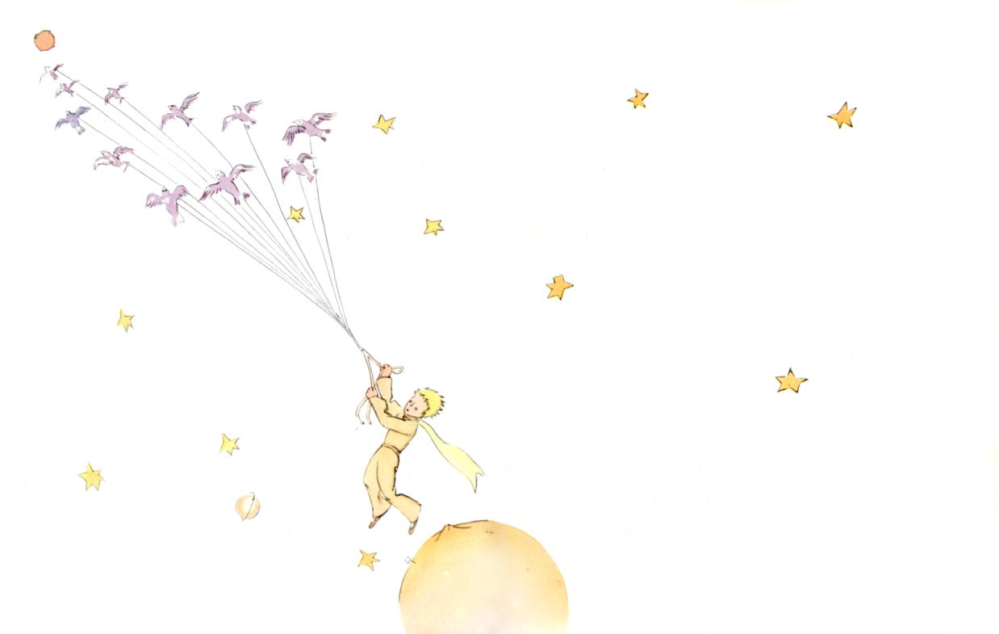
〈星から出るのに、その子はわたり鳥をつかったんだとおもう。〉
［＃改ページ］
子どものみなさん、ゆるしてください。ぼくはこの本をひとりのおとなのひとにささげます。でもちゃんとしたわけがあるのです。そのおとなのひとは、ぼくのせかいでいちばんの友だちなんです。それにそのひとはなんでもわかるひとで、子どもの本もわかります。しかも、そのひとはいまフランスにいて、さむいなか、おなかをへらしてくるしんでいます。心のささえがいるのです。まだいいわけがほしいのなら、このひともまえは子どもだったので、ぼくはその子どもにこの本をささげることにします。おとなはだれでも、もとは子どもですよね。（みんな、そのことをわすれますけど。）じゃあ、ささげるひとをこう書きなおしましょう。
（かわいい少年だったころの）
レオン・ウェルトに
［＃改ページ］ぼくが６つのとき、よんだ本にすばらしい絵があった。『ぜんぶほんとのはなし』という名まえの、しぜんのままの森について書かれた本で、そこに、ボアという大きなヘビがケモノをまるのみしようとするところがえがかれていたんだ。だいたいこういう絵だった。
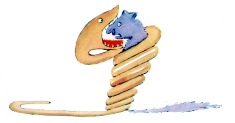
「ボアというヘビは、えものをかまずにまるのみします。そのあとはじっとおやすみして、６か月かけて、おなかのなかでとかします。」と本には書かれていた。
そこでぼくは、ジャングルではこんなこともおこるんじゃないか、とわくわくして、いろいろかんがえてみた。それから色えんぴつで、じぶんなりの絵をはじめてかいてやった。さくひんばんごう１。それはこんなかんじ。

ぼくはこのけっさくをおとなのひとに見せて、こわいでしょ、ときいてまわった。
でもみんな、「どうして、ぼうしがこわいの？」っていうんだ。
この絵は、ぼうしなんかじゃなかった。ボアがゾウをおなかのなかでとかしている絵だった。だから、ぼくはボアのなかみをかいて、おとなのひとにもうまくわかるようにした。あのひとたちは、いつもはっきりしてないとだめなんだ。さくひんばんごう２はこんなかんじ。
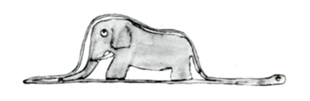
おとなのひとは、ボアの絵なんてなかが見えても見えなくてもどうでもいい、とにかく、ちりやれきし、さんすうやこくごのべんきょうをしなさいと、ぼくにいいつけた。というわけで、ぼくは６さいで絵かきになるゆめをあきらめた。さくひんばんごう１と２がだめだったから、めげてしまったんだ。おとなのひとはじぶんではまったくなんにもわからないから、子どもはくたびれてしまう。いつもいつもはっきりさせなきゃいけなくて。
それでぼくはしぶしぶべつのしごとにきめて、ひこうきのそうじゅうをおぼえた。せかいじゅうをちょっととびまわった。ちりをべんきょうして、ほんとやくに立った。ひとめで中国なのかアリゾナなのかがわかるから、夜なかにとんでまよっても、かなりたすかるってもんだ。
こうしてぼくは生きてきて、ちゃんとしたひとたちともおおぜいであってきた。おとなのひとのなかでくらしてきた。ちかくでも見られた。でもそれでなにかいいことがわかったわけでもなかった。
すこしかしこそうなひとを見つけると、ぼくはいつも、とっておきのさくひんばんごう１を見せてみることにしていた。ほんとうのことがわかるひとなのか知りたかったから。でもかえってくるのは、きまって「ぼうしだね。」って。そういうひとには、ボアのことも、しぜんの森のことも、星のこともしゃべらない。むこうに合わせて、トランプやゴルフ、せいじやネクタイのことをしゃべる。するとおとなのひとは、ものごとがはっきりわかっているひととおちかづきになれて、とてもうれしそうだった。
それまで、ぼくはずっとひとりぼっちだった。だれともうちとけられないまま、６年まえ、ちょっとおかしくなって、サハラさばくに下りた。ぼくのエンジンのなかで、なにかがこわれていた。ぼくには、みてくれるひとも、おきゃくさんもいなかったから、なおすのはむずかしいけど、ぜんぶひとりでなんとかやってみることにした。それでぼくのいのちがきまってしまう。のみ水は、たった７日ぶんしかなかった。
１日めの夜、ぼくはすなの上でねむった。ひとのすむところは、はるかかなただった。海のどまんなか、いかだでさまよっているひとよりも、もっとひとりぼっち。だから、ぼくがびっくりしたのも、みんなわかってくれるとおもう。じつは、あさ日がのぼるころ、ぼくは、ふしぎなかわいいこえでおこされたんだ。
「ごめんください……ヒツジの絵をかいて！」
「えっ？」
「ぼくにヒツジの絵をかいて……」
かみなりにうたれたみたいに、ぼくはとびおきた。目をごしごしこすって、ぱっちりあけた。すると、へんてこりんなおとこの子がひとり、おもいつめたようすで、ぼくのことをじっと見ていた。あとになって、この子のすがたを、わりとうまく絵にかいてみた。でもきっとぼくの絵は、ほんもののみりょくにはかなわない。ぼくがわるいんじゃない。六さいのとき、おとなのせいで絵かきのゆめをあきらめちゃったから、それからずっと絵にふれたことがないんだ。なかの見えないボアの絵と、なかの見えるボアの絵があるだけ。
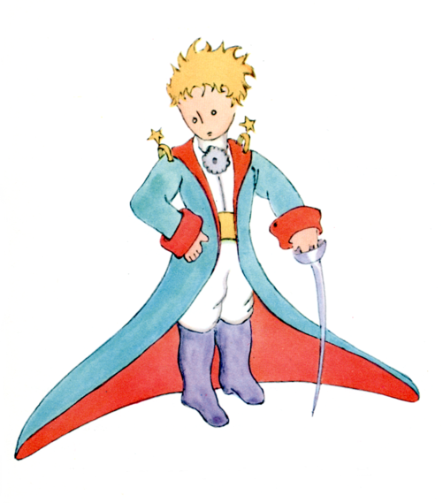
〈あとになって、この子のすがたを、わりとうまく絵にかいてみた。〉
それはともかく、いきなりひとが出てきて、ぼくは目をまるくした。なにせひとのすむところのはるかかなたにいたんだから。でも、おとこの子はみちをさがしているようには見えなかった。へとへとにも、はらぺこにも、のどがからからにも、びくびくしているようにも見えなかった。ひとのすむところのはるかかなた、さばくのどまんなかで、まい子になっている、そんなかんじはどこにもなかった。
やっとのことで、ぼくはその子にこえをかけた。
「えっと……ここでなにをしてるの？」
すると、その子はちゃんとつたえようと、ゆっくりとくりかえした。
「ごめんください……ヒツジの絵をかいて……」
ものすごくふしぎなのに、だからやってしまうことってある。それでなんだかよくわからないけど、ひとのすむところのはるかかなたで死ぬかもしれないのに、ぼくはポケットから１まいのかみとペンをとりだした。でもそういえば、ぼくはちりやれきし、さんすうやこくごぐらいしかならっていないわけなので、ぼくはそのおとこの子に（ちょっとしょんぼりしながら）絵ごころがないんだ、というと、その子はこうこたえた。
「だいじょうぶ。ぼくにヒツジの絵をかいて。」
ヒツジをかいたことがなかったから、やっぱり、ぼくのかけるふたつの絵のうち、ひとつをその子にかいてみせた。なかの見えないボアだった。そのあと、おとこの子のことばをきいて、ぼくはほんとうにびっくりした。
「ちがうよ！ ボアのなかのゾウなんてほしくない。ボアはとってもあぶないし、ゾウなんてでっかくてじゃまだよ。ぼくんち、すごくちいさいんだ。ヒツジがいい。ぼくにヒツジをかいて。」
なので、ぼくはかいた。
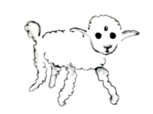
それで、その子は絵をじっとみつめた。
「ちがう！ これもう、びょうきじゃないの。もういっかい。」
ぼくはかいてみた。
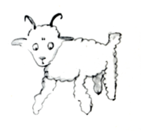
ぼうやは、しょうがないなあというふうにわらった。
「見てよ……これ、ヒツジじゃない。オヒツジだ。ツノがあるもん……」
ぼくはまた絵をかきなおした。
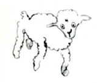
だけど、まえのとおなじで、だめだといわれた。
「これ、よぼよぼだよ。ほしいのは長生きするヒツジ。」
もうがまんできなかった。はやくエンジンをばらばらにしていきたかったから、さっとこういう絵をかいた。
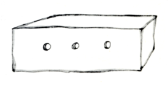
ぼくはいってやった。
「ハコ、ね。きみのほしいヒツジはこのなか。」
ところがなんと、この絵を見て、ぼくのちいさなしんさいんくんは目をきらきらさせたんだ。
「そう、ぼくはこういうのがほしかったんだ！ このヒツジ、草いっぱいいるかなあ？」
「なんで？」
「だって、ぼくんち、すごくちいさいんだもん……」
「きっとへいきだよ。あげたのは、すごくちいさなヒツジだから。」
その子は、かおを絵にちかづけた。
「そんなにちいさくないよ……あ！ ねむっちゃった……」
ぼくがあのときの王子くんとであったのは、こういうわけなんだ。
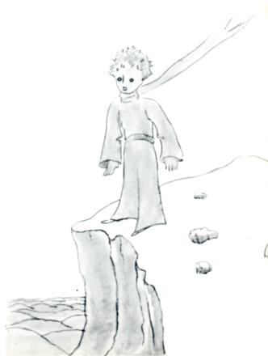
その子がどこから来たのか、なかなかわからなかった。まさに気ままな王子くん、たくさんものをきいてくるわりには、こっちのことにはちっとも耳をかさない。たまたま口からでたことばから、ちょっとずつ見えてきたんだ。たとえば、ぼくのひこうきをはじめて目にしたとき（ちなみにぼくのひこうきの絵はかかない、ややこしすぎるから）、その子はこうきいてきた。
「このおきもの、なに？」
「これはおきものじゃない。とぶんだ。ひこうきだよ。ぼくのひこうき。」
ぼくはとぶ、これがいえて、かなりとくいげだった。すると、その子は大きなこえでいった。
「へえ！ きみ、空からおっこちたんだ！」
「うん。」と、ぼくはばつがわるそうにいった。
「ぷっ！ へんなの……！」
この気まま王子があまりにからからとわらうので、ぼくはほんとにむかついた。ひどい目にあったんだから、ちゃんとしたあつかいをされたかった。それから、その子はこうつづけた。
「なあんだ、きみも空から来たんだ！ どの星にいるの？」
ふと、その子のひみつにふれたような気がして、ぼくはとっさにききかえした。
「それって、きみはどこかべつの星から来たってこと？」
でも、その子はこたえなかった。ぼくのひこうきを見ながら、そっとくびをふった。
「うーん、これだと、あんまりとおくからは来てないか……」
その子はしばらくひとりで、あれこれとぼんやりかんがえていた。そのあとポケットからぼくのヒツジをとりだして、そのたからものをくいいるようにじっと見つめた。
みんなわかってくれるとおもうけど、その子がちょっとにおわせた〈べつの星〉のことが、ぼくはすごく気になった。もっとくわしく知ろうとおもった。
「ぼうやはどこから来たの？ 〈ぼくんち〉ってどこ？ ヒツジをどこにもっていくの？」
その子はこたえにつまって、ぼくにこういうことをいった。
「よかった、きみがハコをくれて。よる、おうちがわりになるよね。」
「そうだね。かわいがるんなら、ひるま、つないでおくためのロープをあげるよ。それと、ながいぼうも。」
でもこのおせっかいは、王子くんのお気にめさなかったみたいだ。
「つなぐ？ そんなの、へんなかんがえ！」
「でもつないでおかないと、どこかに行っちゃって、なくしちゃうよ。」
このぼうやは、またからからとわらいだした。
「でも、どこへ行くっていうの！」
「どこへでも。まっすぐまえとか……」
すると、こんどはこの王子くん、おもいつめたようすで、こうおっしゃる。
「だいじょうぶ、ものすごおくちいさいから、ぼくんち。」
それから、ちょっとさみしそうに、こういいそえた。
「まっすぐまえにすすんでも、あんまりとおくへは行けない……」
こうして、だいじなことがもうひとつわかった。なんと、その子のすむ星は、いっけんのいえよりもちょっと大きいだけなんだ！
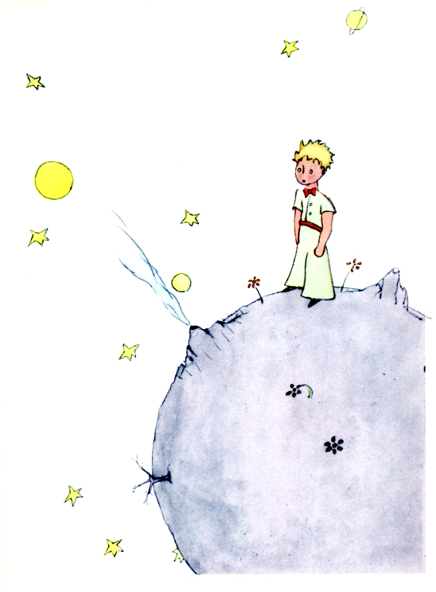
〈しょうわくせいB612の王子くん。〉
といっても、大げさにいうほどのことでもない。ごぞんじのとおり、ちきゅう、もくせい、かせい、きんせいみたいに名まえのある大きな星のほかに、ぼうえんきょうでもたまにしか見えないちいさなものも、なん100ばいとある。たとえばそういったものがひとつ、星はかせに見つかると、ばんごうでよばれることになる。〈しょうわくせい325〉というかんじで。
ちゃんとしたわけがあって、王子くんおすまいの星は、しょうわくせいB612だと、ぼくはおもう。前にも、1909年に、ぼうえんきょうをのぞいていたトルコの星はかせが、その星を見つけている。
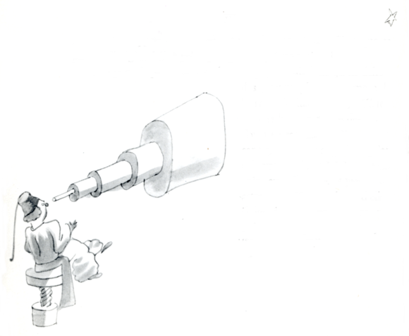
それで、せかい星はかせかいぎ、というところで、見つけたことをきちんとはっぴょうしたんだけど、みにつけているふくのせいで、しんじてもらえなかった。おとなのひとって、いつもこんなふうだ。

でも、しょうわくせいB612はうんがよくて、そのときのいちばんえらいひとが、みんなにヨーロッパふうのふくをきないと死けいだぞ、というおふれを出した。1920年にそのひとは、おじょうひんなめしもので、はっぴょうをやりなおした。するとこんどは、どこもだれもがうんうんとうなずいた。

こうやって、しょうわくせいB612のことをいちいちいったり、ばんごうのはなしをしたりするのは、おとなのためなんだ。おとなのひとは、すうじが大すきだ。このひとたちに、あたらしい友だちができたよといっても、なかみのあることはなにひとつきいてこないだろう。つまり、「その子のこえってどんなこえ？ すきなあそびはなんなの？ チョウチョはあつめてる？」とはいわずに、「その子いくつ？ なんにんきょうだい？ たいじゅうは？ お父さんはどれだけかせぐの？」とかきいてくる。
それでわかったつもりなんだ。おとなのひとに、「すっごいいえ見たよ、ばら色のレンガでね、まどのそばにゼラニウムがあってね、やねの上にもハトがたくさん……」といったところで、そのひとたちは、ちっともそのいえのことをおもいえがけない。こういわなくちゃ。「10まんフランのいえを見ました。」すると「おおすばらしい！」とかいうから。
だから、ぼくがそのひとたちに、「あのときの王子くんがいたっていいきれるのは、あの子にはみりょくがあって、わらって、ヒツジをおねだりしたからだ。ヒツジをねだったんだから、その子がいたっていいきれるじゃないか。」とかいっても、なにいってるの、と子どもあつかいされてしまう！ でもこういったらどうだろう。「あの子のすむ星は、しょうわくせいB612だ。」そうしたらなっとくして、もんくのひとつもいわないだろう。おとなってこんなもんだ。うらんじゃいけない。おとなのひとに、子どもはひろい心をもたなくちゃ。
でももちろん、ぼくたちは生きることがなんなのかよくわかっているから、そう、ばんごうなんて気にしないよね！ できるなら、このおはなしを、ぼくはおとぎばなしふうにはじめたかった。こういえたらよかったのに。
「むかし、気ままな王子くんが、じぶんよりちょっと大きめの星にすんでいました。その子は友だちがほしくて……」生きるってことをよくわかっているひとには、こっちのほうが、ずっともっともらしいとおもう。
というのも、ぼくの本を、あまりかるがるしくよんでほしくないんだ。このおもいでをはなすのは、とてもしんどいことだ。６年まえ、あのぼうやはヒツジといっしょにいなくなってしまった。ここにかこうとするのは、わすれたくないからだ。友だちをわすれるのはつらい。いつでもどこでもだれでも、友だちがいるわけではない。ぼくも、いつ、すうじの大すきなおとなのひとになってしまうともかぎらない。だからそのためにも、ぼくはえのぐとえんぴつをひとケース、ひさしぶりにかった。この年でまた絵をかくことにした。さいごに絵をかいたのは、なかの見えないボアとなかの見えるボアをやってみた、六さいのときだ。あたりまえだけど、なるべくそっくりに、あの子のすがたをかくつもりだ。うまくかけるじしんなんて、まったくない。ひとつかけても、もうひとつはぜんぜんだめだとか。大きさもちょっとまちがってるとか。王子くんがものすごくでかかったり、ものすごくちっちゃかったり。ふくの色もまよってしまう。そうやってあれやこれや、うまくいったりいかなかったりしながら、がんばった。もっとだいじな、こまかいところもまちがってるとおもう。でもできればおおめに見てほしい。ぼくの友だちは、ひとつもはっきりしたことをいわなかった。あの子はぼくを、にたものどうしだとおもっていたのかもしれない。でもあいにく、ぼくはハコのなかにヒツジを見ることができない。ひょっとすると、ぼくもちょっとおとなのひとなのかもしれない。きっと年をとったんだ。
日に日にだんだんわかってきた。どんな星で、なぜそこを出るようになって、どういうたびをしてきたのか。どれも、とりとめなくしゃべっていて、なんとなくそういう話になったんだけど。そんなふうにして、３日めはバオバブのこわい話をきくことになった。このときもヒツジがきっかけだった。この王子くんはふかいなやみでもあるみたいに、ふいにきいてきたんだ。
「ねえ、ほんとなの、ヒツジがちいさな木を食べるっていうのは。」
「ああ、ほんとだよ。」
「そう！ よかった！」
ヒツジがちいさな木を食べるってことが、どうしてそんなにだいじなのか、ぼくにはわからなかった。でも王子くんはそのままつづける。
「じゃあ、バオバブも食べる？」
ぼくはこの王子くんにおしえてさしあげた。バオバブっていうのはちいさな木じゃなくて、きょうかいのたてものぐらい大きな木で、そこにゾウのむれをつれてきても、たった１本のバオバブも食べきれやしないんだ、って。
ゾウのむれっていうのを、王子くんはおもしろがって、
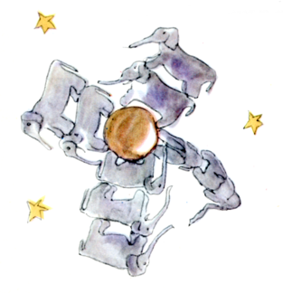
「ゾウの上に、またゾウをのせなきゃ……」
といいつつも、いうことはしっかりいいかえしてきた。
「バオバブも大きくなるまえ、もとは小さいよね。」
「なるほど！ でも、どうしてヒツジにちいさなバオバブを食べてほしいの？」
するとこういうへんじがかえってきた。「え！ わかんないの！」あたりまえだといわんばかりだった。ひとりでずいぶんあたまをつかったけど、ようやくどういうことなのかなっとくできた。
つまり、王子くんの星も、ほかの星もみんなそうなんだけど、いい草とわるい草がある。とすると、いい草の生えるいいタネと、わるい草のわるいタネがあるわけだ。でもタネは目に見えない。土のなかでひっそりねむっている。おきてもいいかなって気になると、のびていって、まずはお日さまにむかって、むじゃきでかわいいそのめを、おずおずと出していくんだ。ハツカダイコンやバラのめなら、生えたままにすればいい。でもわるい草や花になると、見つけしだいすぐ、ひっこぬかないといけない。そして、王子くんの星には、おそろしいタネがあったんだ……それがバオバブのタネ。そいつのために、星のじめんのなかは、めちゃくちゃになった。しかも、たった一本のバオバブでも、手おくれになると、もうどうやってもとりのぞけない。星じゅうにはびこって、根っこで星にあなをあけてしまう。それで、もしその星がちいさくて、そこがびっしりバオバブだらけになってしまえば、星はばくはつしてしまうんだ。
「きっちりしてるかどうかだよ。」というのは、またべつのときの、王子くんのおことば。「あさ、じぶんのみだしなみがおわったら、星のみだしなみもていねいにすること。ちいさいときはまぎらわしいけど、バラじゃないってわかったじてんで、バオバブをこまめにひきぬくようにすること。やらなきゃいけないのは、めんどうといえばめんどうだけど、かんたんといえばかんたんなんだよね。」
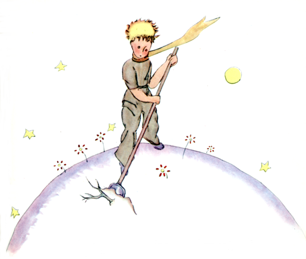
またある日には、ひとつ、ぼくんとこの子どもたちがずっとわすれないような、りっぱな絵をかいてみないかと、ぼくにもちかけてきた。その子はいうんだ。「いつかたびに出たとき、やくに立つよ。やらなきゃいけないことを、のばしのばしにしてると、ときどきぐあいのわるいことがあるよね。それがバオバブだったら、ぜったいひどいことになる。こんな星があるんだ、そこにはなまけものがすんでて、ちいさな木を３本ほうっておいたんだけど……」
というわけで、ぼくは王子くんのおおせのまま、ここにその星をかいた。えらそうにいうのはきらいなんだけど、バオバブがあぶないってことはぜんぜん知られてないし、ひとつの星にいて、そういうことをかるくかんがえていると、めちゃくちゃきけんなことになる。だから、めずらしく、おもいきっていうことにする。いくよ、「子どものみなさん、バオバブに気をつけること！」これは、ぼくの友だちのためでもある。そのひとたちはずっとまえから、すぐそばにきけんがあるのに気がついてない。だからぼくは、ここにこの絵をかかなきゃいけない。ここでいましめるだけのねうちがある。そう、みんなはこんなことをふしぎにおもうかもしれない。「どうしてこの本には、こういう大きくてりっぱな絵が、バオバブの絵だけなんですか？」こたえはとってもかんたん。やってみたけど、うまくいかなかった。バオバブをかいたときは、ただもう、すぐにやらなきゃって、いっしょうけんめいだったんだ。
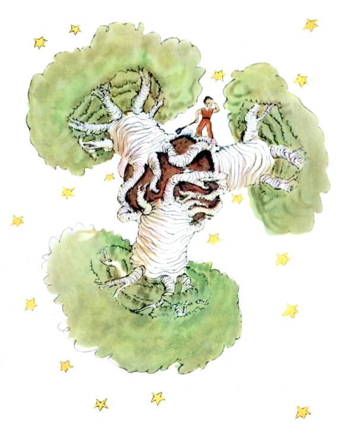
〈バオバブの木。〉
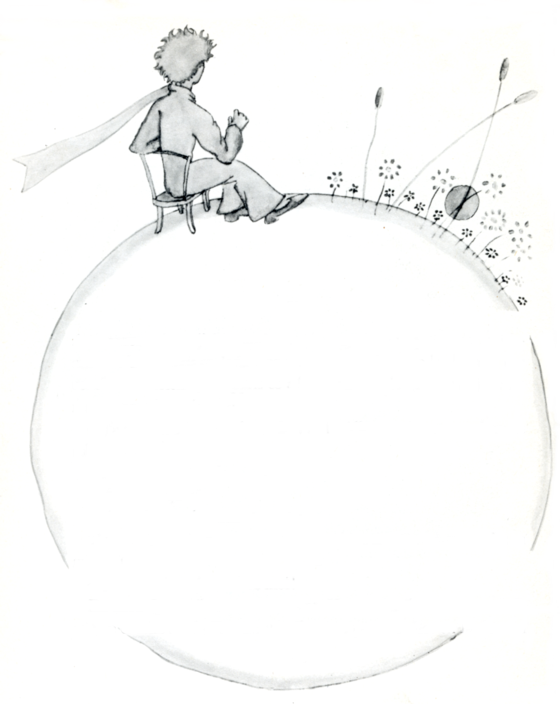
ねえ、王子くん。こんなふうに、ちょっとずつわかってきたんだ。きみがさみしく、ささやかに生きてきたって。ずっときみには、おだやかな夕ぐれしか、いやされるものがなかった。このことをはじめて知ったのは、４日めのあさ、そのとき、きみはぼくにいった。
「夕ぐれが大すきなんだ。夕ぐれを見にいこう……」
「でも、またなきゃ……」
「なにをまつの？」
「夕ぐれをまつんだよ。」
とてもびっくりしてから、きみはじぶんをわらったのかな。こういったよね。
「てっきりまだ、ぼくんちだとおもってた！」
なるほど。ごぞんじのとおり、アメリカでまひるのときは、フランスでは夕ぐれ。だからあっというまにフランスへいけたら、夕ぐれが見られるってことになる。でもあいにく、フランスはめちゃくちゃとおい。だけど、きみの星では、てくてくとイスをもってあるけば、それでいい。そうやってきみは、いつでも見たいときに、くれゆくお日さまを見ていたんだ。
「１日に、44回も夕ぐれを見たことがあるよ！」
といったすこしあとに、きみはこうつけくわえた。
「そうなんだ……ひとはすっごくせつなくなると、夕ぐれがこいしくなるんだ……」
「その44回ながめた日は、じゃあすっごくせつなかったの？」
だけどこの王子くんは、へんじをなさらなかった。
５日め、またヒツジのおかげで、この王子くんにまつわるなぞが、ひとつあきらかになった。その子は、なんのまえおきもなく、いきなりきいてきたんだ。ずっとひとりで、うーんとなやんでいたことが、とけたみたいに。
「ヒツジがちいさな木を食べるんなら、花も食べるのかな？」
「ヒツジは目に入ったものみんな食べるよ。」
「花にトゲがあっても？」
「ああ。花にトゲがあっても。」
「じゃあ、トゲはなんのためにあるの？」
わからなかった。そのときぼくは、エンジンのかたくしまったネジを外そうと、もう手いっぱいだった。しかも気が気でなかった。どうも、てひどくやられたらしいということがわかってきたし、さいあく、のみ水がなくなることもあるって、ほんとにおもえてきたからだ。
「トゲはなんのためにあるの？」
この王子くん、しつもんをいちどはじめたら、ぜったいおやめにならない。ぼくは、ネジでいらいらしていたから、いいかげんにへんじをした。
「トゲなんて、なんのやくにも立たないよ、たんに花がいじわるしたいんだろ！」
「えっ！」
すると、だんまりしてから、その子はうらめしそうにつっかかってきた。
「ウソだ！ 花はかよわくて、むじゃきなんだ！ どうにかして、ほっとしたいだけなんだ！ トゲがあるから、あぶないんだぞって、おもいたいだけなんだ……」
ぼくは、なにもいわなかった。かたわらで、こうかんがえていた。「このネジがてこでもうごかないんなら、いっそ、かなづちでふっとばしてやる。」でも、この王子くんは、またぼくのかんがえをじゃまなさった。
「きみは、ほんとにきみは花が……」
「やめろ！ やめてくれ！ 知るもんか！ いいかげんにいっただけだ。ぼくには、ちゃんとやらなきゃいけないことがあるんだよ！」
その子は、ぼくをぽかんと見た。
「ちゃんとやらなきゃ
 」
」その子はぼくを見つめた。エンジンに手をかけ、指はふるいグリスで黒くよごれて、ぶかっこうなおきものの上にかがんでいる、そんなぼくのことを。
「おとなのひとみたいな、しゃべりかた！」
ぼくはちょっとはずかしくなった。でも、ようしゃなくことばがつづく。
「きみはとりちがえてる……みんないっしょくたにしてる！」
その子は、ほんきでおこっていた。こがね色のかみの毛が、風になびいていた。
「まっ赤なおじさんのいる星があったんだけど、そのひとは花のにおいもかがないし、星もながめない。ひとをすきになったこともなくて、たし算のほかはなんにもしたことがないんだ。１にちじゅう、きみみたいに、くりかえすんだ。『わたしは、ちゃんとしたにんげんだ！ ちゃんとしたにんげんなんだ！』それで、はなをたかくする。でもそんなの、にんげんじゃない、そんなの、キノコだ！」
「な、なに？」
「キノコ！」
この王子くん、すっかりごりっぷくだ。
「100まん年まえから、花はトゲをもってる。100まん年まえから、ヒツジはそんな花でも食べてしまう。だったらどうして、それをちゃんとわかろうとしちゃいけないわけ？ なんで、ものすごくがんばってまで、そのなんのやくにも立たないトゲを、じぶんのものにしたのかって。ヒツジと花のけんかは、だいじじゃないの？ ふとった赤いおじさんのたし算のほうがちゃんとしてて、だいじだっていうの？ たったひとつしかない花、ぼくの星のほかにはどこにもない、ぼくだけの花が、ぼくにはあって、それに、ちいさなヒツジが１ぴきいるだけで、花を食べつくしちゃうこともあるって、しかも、じぶんのしてることもわからずに、あさ、ふっとやっちゃうことがあるってわかってたとしても、それでもそれが、だいじじゃないっていうの？」
その子はまっ赤になって、しゃべりつづける。
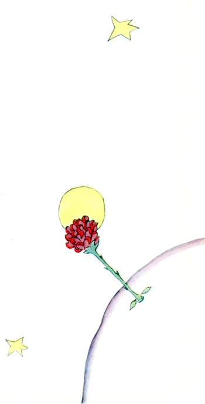
「だれかが、200まんの星のなかにもふたつとない、どれかいちりんの花をすきになったんなら、そのひとはきっと、星空をながめるだけでしあわせになれる。『あのどこかに、ぼくの花がある……』っておもえるから。でも、もしこのヒツジが、あの花を食べたら、そのひとにとっては、まるで、星ぜんぶが、いきなりなくなったみたいなんだ！ だから、それはだいじじゃないっていうの、ねえ！」
その子は、もうなにもいえなかった。いきなり、わあっとなきだした。夜がおちて、ぼくはどうぐを手ばなした。なんだか、どうでもよくなった。エンジンのことも、ネジのことも、のどのかわきも、死ぬことさえも。ひとつの星、ひとつのわくせい、ぼくのいばしょ――このちきゅうの上に、ひとりの気ままな王子くんが、いじらしく立っている。ぼくはその子をだきしめ、ゆっくりとあやした。その子にいった。「きみのすきな花は、なにもあぶなくなんかない……ヒツジにくちわをかいてあげる、きみのヒツジに……花をまもるものもかいてあげる……あと……」どういっていいのか、ぼくにはよくわからなかった。じぶんは、なんてぶきようなんだろうとおもった。どうやったら、この子と心がかようのか、ぼくにはわからない……すごくふしぎなところだ、なみだのくにって。
ほどなくして、その花のことがどんどんわかっていった。それまでも、王子くんの星には、とてもつつましい花があった。花びらがひとまわりするだけの、ちっともばしょをとらない花だ。あさ、気がつくと草のなかから生えていて、夜にはなくなっている。でも、あの子のいった花はそれじゃなくて、ある日、どこからかタネがはこばれてきて、めを出したんだ。王子くんはまぢかで、そのちいさなめを見つめた。いままで見てきた花のめとは、ぜんぜんちがっていた。またべつのバオバブかもしれなかった。でも、くきはすぐのびるのをやめて、花になるじゅんびをはじめた。王子くんは、大きなつぼみがつくのを目のあたりにして、花がひらくときはどんなにすごいんだろうと、わくわくした。けれど、その花はみどり色のへやに入ったまま、なかなかおめかしをやめなかった。どんな色がいいか、じっくりとえらび、ちまちまとふくをきて、花びらをひとつひとつととのえていく。ひなげしみたいに、しわくちゃのまま出たくなかった。きらきらとかがやくくらい、きれいになるまで、花をひらきたくなかった。そうなんだ、その花はとってもおしゃれさんなんだ！ だから、かくれたまま、なん日もなん日も、みじたくをつづけた。ようやく、あるあさ、ちょうどお日さまがのぼるころ、ぱっと花がひらいた。
あまりに気をくばりすぎたからか、その花はあくびをした。
「ふわあ。目がさめたばかりなの……ごめんなさいね……まだ、かみがくしゃくしゃ……」
そのとき、王子くんの口から、おもわずことばがついてでた。
「き、きれいだ！」
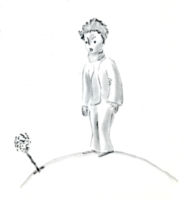
「そうね。」と花はなにげなくいった。「お日さまといっしょにさいたもの……」
この花、あまりつつましくもないけど、心がゆさぶられる……と王子くんはおもった。
そこへすぐ、花のことば。「あさのおしょくじのじかんじゃなくて。このままあたしはほうっておかれるの？」
王子くんは、もうしわけなくなって、つめたい水のはいったじょうろをとってきて、花に水をやった。
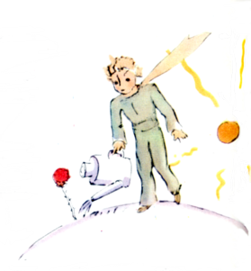
こんなちょうしで、ちょっとうたぐりぶかく、みえっぱりだったから、その花はすぐに、その子をこまらせるようになった。たとえばある日、花はこの王子くんに、よっつのトゲを見せて、こういった。
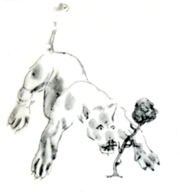
「ツメをたてたトラが来たって、へいき。」
「トラなんて、ぼくの星にはいないよ。」と王子くんはいいかえした。「それに、トラは草なんて食べない。」
「あたし、草じゃないんだけど。」と花はなにげなくいった。
「ごめんなさい……」
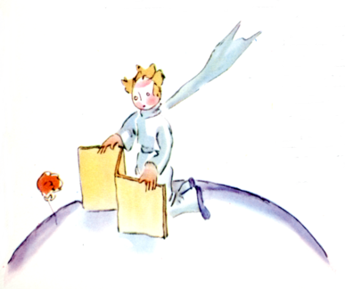
「トラなんてこわくないの、ただ、風にあたるのは大っきらい。ついたてでもないのかしら？」
『風にあたるのがきらいって……やれやれ、こまった花だ。』と王子くんはおもった。『この花、とってもきむずかしいなあ……』
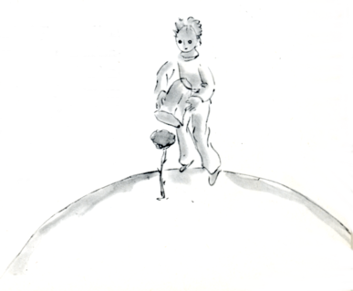
「夜には、ガラスのおおいをかけてちょうだい。あなたのおうち、すっごくさむい。いごこちわるい。あたしのもといたところは……」
と、ここで花は話をやめた。花はタネのかたちでやってきた。ほかのところなんて、わかるわけなかった。ついむじゃきにウソをいってしまいそうになったので、はずかしくなったけど、花はえへんえへんとせきをして、王子くんのせいにしようとした。
「ついたては……？」
「とりにいこうとしたら、きみがしゃべったんじゃないか！」
また花は、わざとらしくえへんとやった。その子におしつけるのは、うしろめたかったけど。
これだから、王子くんは、まっすぐ花をあいしていたけど、すぐしんじられなくなった。たいしたことのないことばも、ちゃんとうけとめたから、すごくつらくなっていった。
「きいちゃいけなかった。」って、あるとき、その子はぼくにいった。「花はきくものじゃなくて、ながめて、においをかぐものだったんだ。ぼくの花は、ぼくの星を、いいにおいにした。でも、それをたのしめばいいって、わかんなかった。ツメのはなしにしても、ひどくいらいらしたけど、気もちをわかってあげなくちゃいけなかったんだ。」
まだまだはなしはつづいた。
「そのときは、わかんなかった！ ことばよりも、してくれたことを、見なくちゃいけなかった。あの子は、いいにおいをさせて、ぼくをはれやかにしてくれた。ぼくはぜったいに、にげちゃいけなかった！ へたなけいさんのうらにも、やさしさがあったのに。あの花は、あまのじゃくなだけなんだ！ でもぼくはわかすぎたから、あいすることってなんなのか、わかんなかった。」
星から出るのに、その子はわたり鳥をつかったんだとおもう。出る日のあさ、じぶんの星のかたづけをした。火のついた火山のススを、ていねいにはらった。そこにはふたつ火のついた火山があって、あさごはんをあたためるのにちょうどよかった。それと火のきえた火山もひとつあったんだけど、その子がいうには「まんがいち！」のために、その火のきえた火山もおなじようにススをはらった。しっかりススをはらえば、火山の火も、どかんとならずに、ちろちろとながつづきする。どかんといっても、えんとつから火が出たくらいの火なんだけど。もちろん、ぼくらのせかいでは、ぼくらはあんまりちっぽけなので、火山のススはらいなんてできない。だから、ぼくらにとって火山ってのはずいぶんやっかいなことをする。
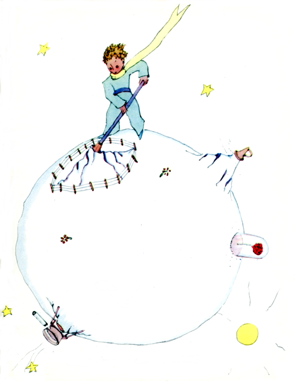
〈火のついた火山のススを、ていねいにはらった。〉
それから、この王子くんはちょっとさみしそうに、バオバブのめをひっこぬいた。これがさいご、もうぜったいにかえってこないんだ、って。こういう、まいにちきめてやってたことが、このあさには、ずっとずっといとおしくおもえた。さいごにもういちどだけ、花に水をやって、ガラスのおおいをかぶせようとしたとき、その子はふいになきたくなってきた。
「さよなら。」って、その子は花にいった。
でも花はなにもかえさなかった。
「さよなら。」って、もういちどいった。
花はえへんとやったけど、びょうきのせいではなかった。
「あたし、バカね。」と、なんとか花がいった。「ゆるしてね。おしあわせに。」
つっかかってこなかったので、その子はびっくりした。ガラスのおおいをもったまま、おろおろと、そのばに立ちつくした。どうしておだやかでやさしいのか、わからなかった。
「ううん、すきなの。」と花はいった。「きみがそのことわかんないのは、あたしのせい。どうでもいいか。でも、きみもあたしとおなじで、バカ。おしあわせに。……おおいはそのままにしといて。もう、それだけでいい。」
「でも風が……」
「そんなにひどいびょうきじゃないの……夜、ひんやりした空気にあたれば、よくなるとおもう。あたし、花だから。」
「でも虫は……」
「毛虫の１ぴきや２ひき、がまんしなくちゃ。チョウチョとなかよくなるんだから。すごくきれいなんだってね。そうでもしないと、ここにはだれも来ないし。とおくだしね、きみは。大きな虫でもこわくない。あたしには、ツメがあるから。」
花は、むじゃきによっつのトゲを見せた。それからこういった。
「そんなぐずぐずしないで、いらいらしちゃう。行くってきめたんなら、ほら！」
なぜなら、花はじぶんのなきがおを見られなくなかったんだ。花ってよわみを見せたくないものだから……。
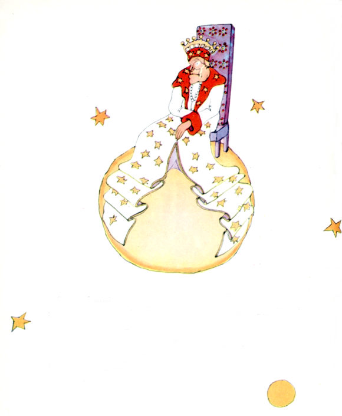
その子は、しょうわくせい325、326、327、328、329や330のあたりまでやってきた。知らないこと、やるべきことを見つけに、とりあえずよってみることにした。
さいしょのところは、王さまのすまいだった。王さまは、まっ赤なおりものとアーミンの白い毛がわをまとって、あっさりながらもでんとしたイスにこしかけていた。
「なんと！ けらいだ。」と、王子くんを見るなり王さまは大ごえをあげた。
王子くんはふしぎにおもった。
「どうして、ぼくのことをそうおもうんだろう、はじめてあったのに！」
王さまにかかれば、せかいはとてもあっさりしたものになる。だれもかれもみんな、けらい。その子は知らなかったんだ。
「ちこうよれ、よう見たい。」王さまは、やっとだれかに王さまらしくできると、うれしくてたまらなかった。
王子くんは、どこかにすわろうと、まわりを見た。でも、星は大きな毛がわのすそで、どこもいっぱいだった。その子はしかたなく立ちっぱなし、しかもへとへとだったから、あくびが出た。
「王のまえであくびとは、さほうがなっとらん。」と王さまはいった。「だめであるぞ。」
「がまんなんてできないよ。」と王子くんはめいわくそうにへんじをした。「長たびで、ねてないんだ。」
「ならば、あくびをせよ。ひとのあくびを見るのも、ずいぶんごぶさたであるな、あくびとはこれはそそられる。さあ！ またあくびせよ、いうことをきけ。」
「そんなせまられても……むりだよ……」と王子くんは、かおをまっ赤にした。
「むむむ！ では……こうだ、あるときはあくびをせよ、またあるときは……」
王さまはちょっとつまって、ごきげんななめ。
なぜなら王さまは、なんでもじぶんのおもいどおりにしたくて、そこからはずれるものは、ゆるせなかった。いわゆる〈ぜったいの王さま〉ってやつ。でも根はやさしかったので、ものわかりのいいことしか、いいつけなかった。
王さまにはこんな口ぐせがある。「いいつけるにしても、しょうぐんに海鳥になれといって、しょうぐんがいうことをきかなかったら、それはしょうぐんのせいではなく、こちらがわるい。」
「すわっていい？」と、王子くんは気まずそうにいった。
「すわるであるぞ。」王さまは毛がわのすそをおごそかにひいて、いいつけた。
でも、王子くんにはよくわからないことがあった。この星はごくごくちーっちゃい。王さまはいったい、なにをおさめてるんだろうか。
「へいか……すいませんが、しつもんが……」
「しつもんをせよ。」と王さまはあわてていった。
「へいかは、なにをおさめてるんですか？」
「すべてである。」と王さまはあたりまえのようにこたえた。
「すべて？」
王さまはそっとゆびを出して、じぶんの星と、ほかのわくせいとか星とか、みんなをさした。
「それが、すべて？」と王子くんはいった。
「それがすべてである……」と王さまはこたえた。
なぜなら〈ぜったいの王さま〉であるだけでなく、〈うちゅうの王さま〉でもあったからだ。
「なら、星はみんな、いうとおりになるの？」
「むろん。」と王さまはいった。「たちまち、いうとおりになる。それをやぶるものは、ゆるさん。」
あまりにすごい力なので、王子くんはびっくりした。じぶんにもしそれだけの力があれば、44回といわず、72回、いや100回でも、いやいや200回でも、夕ぐれがたった１日のあいだに見られるんじゃないか、しかもイスもうごかさずに！ そう、かんがえたとき、ちょっとせつなくなった。そういえば、じぶんのちいさな星をすててきたんだって。だから、おもいきって王さまにおねがいをしてみた。
「夕ぐれが見たいんです……どうかおねがいします……夕ぐれろって、いってください……」
「もし、しょうぐんに花から花へチョウチョみたいにとべ、であるとか、かなしい話を書け、であるとか、海鳥になれ、であるとかいいつけて、しょうぐんが、いわれたことをできなかったとしよう。なら、そいつか、この王か、どちらがまちがってると、そちはおもう？」
「王さまのほうです。」と王子くんはきっぱりいった。
「そのとおり。それぞれには、それぞれのできることをまかせねばならぬ。ものごとがわかって、はじめて力がある。もし、こくみんに海へとびこめといいつけようものなら、国がひっくりかえる。そのようにせよ、といってもいいのは、そもそも、ものごとをわきまえて、いいつけるからである。」
「じゃあ、ぼくの夕ぐれは？」と王子くんはせまった。なぜなら王子くん、いちどきいたことは、ぜったいにわすれない。
「そちの夕ぐれなら、見られるぞ。いいつけよう。だが、まとう。うまくおさめるためにも、いいころあいになるまでは。」
「それはいつ？」と王子くんはたずねる。
「むむむ！」と王さまはいって、ぶあつい〈こよみ〉をしらべた。「むむむ！ そうだな……だい……たい……ごご７じ40ぷんくらいである！ さすれば、いうとおりになるのがわかるだろう。」
王子くんはあくびをした。夕ぐれにあえなくて、ざんねんだった。それに、ちょっともううんざりだった。
「ここですることは、もうないから。」と王子くんは王さまにいった。「そろそろ行くよ！」
「行ってはならん。」と王さまはいった。けらいができて、それだけうれしかったんだ。「行ってはならん、そちを、だいじんにしてやるぞ！」
「それで、なにをするの？」
「む……ひとをさばくであるぞ！」
「でも、さばくにしても、ひとがいないよ！」
「それはわからん。まだこの王国をぐるりとまわってみたことがない。年をとったし、大きな
「ふうん！ でもぼくはもう見たよ。」と、王子くんはかがんで、もういちど、ちらっと星のむこうがわを見た。「あっちには、ひとっこひとりいない……」
「なら、じぶんをさばくである。」と王さまはこたえた。「もっとむずかしいぞ。じぶんをさばくほうが、ひとをさばくよりも、はるかにむずかしい。うまくじぶんをさばくことができたなら、それは、しょうしんしょうめい、けんじゃのあかしだ。」
すると王子くんはいった。「ぼく、どこにいたって、じぶんをさばけます。ここにすむひつようはありません。」
「むむむ！ たしか、この星のどこかに、よぼよぼのネズミが１ぴきおる。夜、もの音がするからな。そのよぼよぼのネズミをさばけばよい。ときどき、死けいにするんである。そうすれば、そのいのちは、そちのさばきしだいである。だが、いつもゆるしてやることだ、だいじにせねば。１ぴきしかおらんのだ。」
また王子くんはへんじをする。「ぼく、死けいにするのきらいだし、もうさっさと行きたいんです。」
「ならん。」と王さまはいう。
もう、王子くんはいつでも行けたんだけど、年よりの王さまをしょんぼりさせたくなかった。
「もし、へいかが、いうとおりになるのをおのぞみなら、ものわかりのいいことを、いいつけられるはずです。いいつける、ほら、１ぷんいないにしゅっぱつせよ、とか。ぼくには、もう、いいころあいなんだとおもいます……」
王さまはなにもいわなかった。王子くんはとりあえず、どうしようかとおもったけど、ためいきをついて、ついに星をあとにした……
「そちを、ほかの星へつかわせるぞ！」そのとき、王さまはあわてて、こういった。
まったくもってえらそうないいかただった。
おとなのひとって、そうとうかわってるな、と王子くんは心のなかでおもいつつ、たびはつづく。
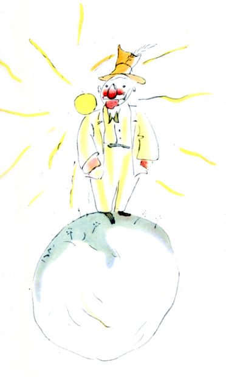
ふたつめの星は、みえっぱりのすまいだった。
「ふふん！ ファンのおでましか！」王子くんが見えるなり、みえっぱりはとおくから大ごえをあげた。
というのも、みえっぱりにかかれば、だれもかれもみんなファンなんだ。
「こんにちは。」と王子くんはいった。「へんなぼうしだね。」
「あいさつできる。」と、みえっぱりはいう。「はくしゅされたら、これであいさつする。あいにく、ここをとおりすぎるひとなんていないわけだが。」
「うん？」王子くんは、なんのことかわからなかった。
「りょう手で、ぱちぱちとやってみな。」と、みえっぱりはその子にすすめた。
王子くんは、りょう手でぱちぱちとやった。みえっぱりは、ぼうしをちょっともち上げて、そっとあいさつをした。
「王さまのところよりもたのしいな。」と王子くんは心のなかでおもった。だからもういちど、りょう手でぽちぱちとやった。みえっぱりも、ぼうしをちょっともち上げて、もういちどあいさつをした。
５ふんつづけてみたけど、おなじことばかりなので、王子くんはこのあそびにもあきてしまった。
「じゃあ、そのぼうしを下ろすには、どうしたらいいの？」と、その子はきいた。
でも、みえっぱりはきいてなかった。みえっぱりは、ほめことばにしか、ぜったい耳をかさない。
「おまえは、おれさまを心のそこから、たたえているか？」と、その男は王子くんにきいた。
「たたえるって、どういうこと？」
「たたえるっていうのは、このおれさまが、この星でいちばんかっこよくて、いちばんおしゃれで、いちばん金もちで、いちばんかしこいんだって、みとめることだ。」
「でも、星にはきみしかいないよ！」
「おねがいだ、とにかくおれさまをたたえてくれ！」
「たたえるよ。」といって、王子くんは、かたをちょっとあげた。「でも、きみ、そんなことのどこがだいじなの？」
そして王子くんは、そこをあとにした。
おとなのひとって、やっぱりそうとうおかしいよ、とだけ、その子は心のなかで思いつつ、たびはつづく。
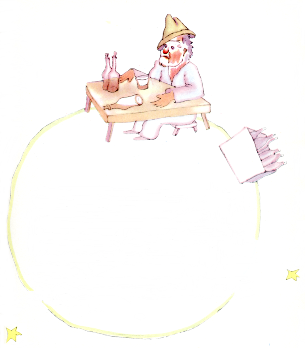
つぎの星は、のんだくれのすまいだった。ほんのちょっとよっただけなのに、王子くんは、ずいぶん気もちがおちこんでしまった。
「ここでなにしてるの？」王子くんは、のんだくれにいった。その子が見ると、その男は、からのビンひとそろい、なかみのはいったビンひとそろいをまえにして、だんまりすわっていた。
「のんでんだ。」と、のんだくれは、しょんぼりとこたえた。
「なんで、のむの？」と王子くんはたずねた。
「わすれたいんだ。」と、のんだくれはこたえた。
「なにをわすれたいの？」と、王子くんは気のどくになってきて、さらにきいた。
「はずかしいのをわすれたい。」と、のんだくれはうつむきながら、うちあけた。
「なにがはずかしいの？」と、王子くんはたすけになりたくて、たずねてみた。
「のむのがはずかしい！」のんだくれは、そういったきり、とうとうだんまりをきめこんだ。
どうしていいかわからず、王子くんは、そこをあとにした。
おとなのひとって、やっぱりめちゃくちゃおかしい、とその子は心のなかで思いつつ、たびはつづく。
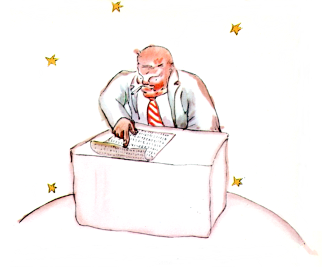
よっつめの星は、しごとにんげんのものだった。このひとは、とってもいそがしいので、王子くんが来たときも、かおを上げなかった。
「こんにちは。」と、その子はいった。「たばこの火、きえてるよ。」
「３＋２＝５。５＋７＝12。12＋３＝15。こんにちは。15＋７＝22。22＋６＝28。火をつけなおすひまなんてない。26＋５＝31。ふう。ごうけいが、５おく162まん2731。」
「なに、その５おくって。」
「ん？ まだいたのか。５おく……もうわからん……やらなきゃいけないことがたくさんあるんだ！ ちゃんとしてるんだ、わたしは。むだ口たたいてるひまはない！ ２＋５＝７……」
「なんなの、その５おく100まんっていうのは。」また王子くんはいった。なにがあっても、いちどしつもんをはじめたら、ぜったいにやめない。
しごとにんげんは、かおを上げた。
「54年この星にすんでいるが、気がちったのは、３どだけだ。さいしょは、あれだ、22年まえのこと、コガネムシがどこからともなく、とびこんできたせいだ。ぶんぶんとうるさくしたから、たし算を４回まちがえた。２どめは、あれだ、11年まえ、リウマチのほっさがおきたせいだ。うんどうぶそくで、あるくひまもない。ちゃんとしてるんだ、わたしは。３どめは……まさにいまだ！ さてと、５おく100……」
「……も、なにがあるの？」
しごとにんげんは、ほっといてはもらえないんだと、あきらめた。
「……も、あのちいさいやつがあるんだ。ときどき空に見えるだろ。」
「ハエ？」
「いいや、そのちいさいのは、ひかる。」
「ミツバチ？」
「いいや。そのちいさいのは、こがね色で、なまけものをうっとりさせる。だが、ちゃんとしてるからな、わたしは！ うっとりしてるひまはない。」
「あっ！ 星？」
「そうだ、星だ。」
「じゃあ、５おく100まんの星をどうするの？」
「５おく162まん2731。ちゃんとしてるんだ、わたしは。こまかいんだ。」
「それで、星をどうするの？」
「どうするかって？」
「うん。」
「なにも。じぶんのものにする。」
「星が、きみのもの？」
「そうだ。」
「でも、さっきあった王さまは……」
「王さまは、じぶんのものにしない、〈おさめる〉んだ。ぜんぜんちがう。」
「じゃあ、星がじぶんのものだと、なんのためになるの？」
「ああ、お金もちになれるね。」
「じゃあ、お金もちだと、なんのためになるの？」
「またべつの星が買える、あたらしいのが見つかったら。」
王子くんは心のなかでおもった。『このひと、ちょっとへりくつこねてる。さっきのよっぱらいといっしょだ。』
でもとりあえず、しつもんをつづけた。
「どうやったら、星がじぶんのものになるの？」
「そいつは、だれのものだ？」と、しごとにんげんは、ぶっきらぼうにへんじをした。
「わかんない。だれのものでもない。」
「じゃあ、わたしのものだ。さいしょにおもいついたんだから。」
「それでいいの？」
「もちろん。たとえば、きみが、だれのものでもないダイヤを見つけたら、それはきみのものになる。だれのものでもない島を見つけたら、それはきみのもの。さいしょになにかをおもいついたら、〈とっきょ〉がとれる。きみのものだ。だから、わたしは星をじぶんのものにする。なぜなら、わたしよりさきに、だれひとりも、そんなことをおもいつかなかったからだ。」
「うん、なるほど。」と王子くんはいった。「で、それをどうするの？」
「とりあつかう。かぞえて、かぞえなおす。」と、しごとにんげんはいった。「むずかしいぞ。だが、わたしは、ちゃんとしたにんげんなんだ！」
王子くんは、まだなっとくできなかった。
「ぼくは、スカーフいちまい、ぼくのものだったら、首のまわりにまきつけて、おでかけする。ぼくは、花が１りん、ぼくのものだったら、花をつんでもっていく。でも、きみ、星はつめないよね！」
「そうだ。だが、ぎんこうにあずけられる。」
「それってどういうこと？」
「じぶんの星のかずを、ちいさな紙きれにかきとめるってことだ。そうしたら、その紙を、ひきだしにしまって、カギをかける。」
「それだけ？」
「それでいいんだ！」
王子くんはおもった。『おもしろいし、それなりにかっこいい。でも、ぜんぜんちゃんとしてない！』
王子くんは、ちゃんとしたことについて、おとなのひとと、ちがったかんがえをもっていたんだ。
「ぼく。」と、その子はことばをつづける。「花が１りん、ぼくのもので、まいにち水をやります。火山がみっつ、ぼくのもので、まいしゅう、ススはらいをします。それに、火がきえてるのも、ススはらいします。まんがいちがあるから。火山のためにも、花のためにもなってます、ぼくのものにしてるってことが。でも、きみは星のためにはなってません……」
しごとにんげんは、口もとをひらいたけど、かえすことばが、みつからなかった。王子くんは、そこをあとにした。
おとなのひとって、やっぱりただのへんてこりんだ、とだけ、その子は心のなかでおもいつつ、たびはつづく。
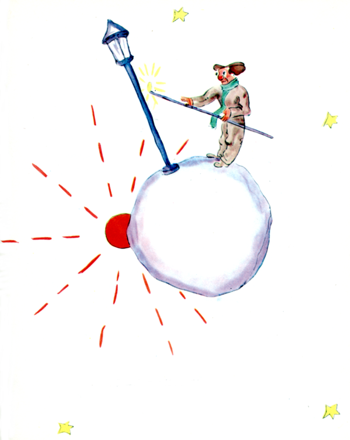
〈「それこそ、ひどい仕事だよ。」〉
いつつめの星は、すごくふしぎなところだった。ほかのどれよりも、ちいさかった。ほんのぎりぎり、あかりと、あかりつけの入るばしょがあるだけだった。王子くんは、どうやってもわからなかった。空のこんなばしょで、星に家もないし、人もいないのに、あかりとあかりつけがいて、なんのためになるんだろうか。それでも、その子は、心のなかでこうおもった。
『このひとは、ばかばかしいかもしれない。でも、王さま、みえっぱり、しごとにんげんやのんだくれなんかよりは、ばかばかしくない。そうだとしても、このひとのやってることには、いみがある。あかりをつけるってことは、たとえるなら、星とか花とかが、ひとつあたらしくうまれるってこと。だから、あかりをけすのは、星とか花をおやすみさせるってこと。とってもすてきなおつとめ。すてきだから、ほんとうに、だれかのためになる。』
その子は星にちかづくと、あかりつけにうやうやしくあいさつをした。
「こんにちは。どうして、いま、あかりをけしたの？」
「しなさいっていわれてるから。」と、あかりつけはこたえた。「こんにちは。」
「しなさいって、なにを？」
「このあかりをけせって。こんばんは。」
と、そのひとは、またつけた。
「えっ、どうして、いま、またつけたの？」
「しなさいっていわれてるから。」と、あかりつけはこたえた。
「よくわかんない。」と王子くんはいった。
「わかんなくていいよ。」と、あかりつけはいった。「しなさいは、しなさいだ。こんにちは。」
と、あかりをけした。
それから、おでこを赤いチェックのハンカチでふいた。
「それこそ、ひどいしごとだよ。むかしは、ものがわかってた。あさけして、夜つける。ひるのあまったじかんをやすんで、夜のあまったじかんは、ねる……」
「じゃあ、そのころとは、べつのことをしなさいって？」
「おなじことをしなさいって。」と、あかりつけはいった。「それがほんっと、ひどい話なんだ！ この星は年々、まわるのがどんどん早くなるのに、おなじことをしなさいって！」
「つまり？」
「つまり、いまでは、１ぷんでひとまわりするから、ぼくにはやすむひまが、すこしもありゃしない。１ぷんのあいだに、つけたりけしたり！」
「へんなの！ きみんちじゃ、１日が１ぷんだなんて！」
「なにがへんだよ。」と、あかりつけがいった。「もう、ぼくらは１か月もいっしょにしゃべってるんだ。」
「１か月？」
「そう。30ぷん、30日！ こんばんは。」
と、またあかりをつけた。
王子くんは、そのひとのことをじっと見た。しなさいっていわれたことを、こんなにもまじめにやる、このあかりつけのことが、すきになった。その子は、夕ぐれを見たいとき、じぶんからイスをうごかしていたことを、おもいだした。その子は、この友だちをたすけたかった。
「ねえ……やすみたいときに、やすめるコツ、知ってるよ……」
「いつだってやすみたいよ。」と、あかりつけはいった。
ひとっていうのは、まじめにやってても、なまけたいものなんだ。
王子くんは、ことばをつづけた。
「きみの星、ちいさいから、大またなら３ぽでひとまわりできるよね。ずっと日なたにいられるように、ゆっくりあるくだけでいいんだよ。やすみたくなったら、きみはあるく……すきなぶんだけ、おひるがずっとつづく。」
「そんなの、たいしてかわらないよ。」と、あかりつけはいった。「ぼくがずっとねがってるのは、ねむることなんだ。」
「こまったね。」と王子くんがいった。
「こまったね。」と、あかりつけもいった。「こんにちは。」
と、あかりをけした。
王子くんは、ずっととおくへたびをつづけながら、こんなふうにおもった。『あのひと、ほかのみんなから、ばかにされるだろうな。王さま、みえっぱり、のんだくれ、しごとにんげんから。でも、ぼくからしてみれば、たったひとり、あのひとだけは、へんだとおもわなかった。それっていうのも、もしかすると、あのひとが、じぶんじゃないことのために、あくせくしてたからかも。』
その子は、ざんねんそうにためいきをついて、さらにかんがえる。
『たったひとり、あのひとだけ、ぼくは友だちになれるとおもった。でも、あのひとの星は、ほんとにちいさすぎて、ふたりも入らない……』
ただ、王子くんとしては、そうとはおもいたくなかったんだけど、じつは、この星のことも、ざんねんにおもっていたんだ。だって、なんといっても、24じかんに1440回も夕ぐれが見られるっていう、めぐまれた星なんだから！
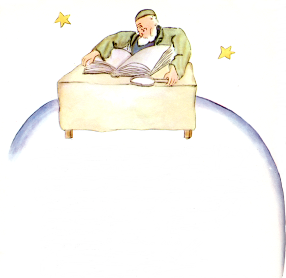
むっつめの星は、なん10ばいもひろい星だった。ぶあつい本をいくつも書いている、おじいさんのすまいだった。
「おや、たんけん家じゃな。」王子くんが見えるなり、そのひとは大ごえをあげた。
王子くんは、つくえの上にこしかけて、ちょっといきをついた。もうそれだけたびをしたんだ！
「どこから来たね？」と、おじいさんはいった。
「なあに、そのぶあつい本？」と王子くんはいった。「ここでなにしてるの？」
「わしは、ちりのはかせじゃ。」と、おじいさんはいった。
「なあに、そのちりのはかせっていうのは？」
「ふむ、海、川、町、山、さばくのあるところをよくしっとる、もの知りのことじゃ。」
「けっこうおもしろそう。」と王子くんはいった。「やっと、ほんもののしごとにであえた！」それからその子は、はかせの星をぐるりと見た。こんなにもでんとした星は、見たことがなかった。
「とってもみごとですね、あなたの星は。大うなばらは、あるの？」
「まったくもってわからん。」と、はかせはいった。
「えっ！（王子くんは、がっかりした。）じゃあ、山は？」
「まったくもってわからん。」と、はかせはいった。
「じゃあ、町とか川とか、さばくとかは？」
「それも、まったくもってわからん。」と、はかせはいった。
「でも、ちりのはかせなんでしょ！」
「さよう。」と、はかせはいった。「だが、たんけん家ではない。それに、わしの星にはたんけん家がおらん。ちりのはかせはな、町、川、山、海、大うなばらやさばくをかぞえに行くことはない。はかせというのは、えらいひとだもんで、あるきまわったりはせん。じぶんのつくえを、はなれることはない。そのかわり、たんけん家を、むかえるんじゃ。はかせは、たんけん家にものをたずね、そのみやげ話をききとる。そやつらの話で、そそられるものがあったら、そこではかせは、そのたんけん家が、しょうじきものかどうかをしらべるんじゃ。」
「どうして？」
「というのもな、たんけん家がウソをつくと、ちりの本はめちゃくちゃになってしまう。のんだくれのたんけん家も、おなじだ。」
「どうして？」と王子くんはいった。
「というのもな、よっぱらいは、ものがだぶって見える。そうすると、はかせは、ひとつしかないのに、ふたつ山があるように、書きとめてしまうからの。」
「たんけん家に、ふむきなひと、ぼく知ってるよ。」と王子くんはいった。
「いるじゃろな。ところで、そのたんけん家が、しょうじきそうだったら、はかせは、なにが見つかったのか、たしかめることになる。」
「見に行くの？」
「いや。それだと、あまりにめんどうじゃ。だから、はかせは、たんけん家に、それをしんじさせるだけのものを出せ、という。たとえば、大きな山を見つけたっていうんであれば、大きな石ころでももってこにゃならん。」
はかせは、ふいにわくわくしだした。
「いやはや、きみはとおくから来たんだな！ たんけん家だ！ さあ、わしに、きみの星のことをしゃべってくれんか。」
そうやって、はかせはノートをひらいて、えんぴつをけずった。はかせというものは、たんけん家の話をまず、えんぴつで書きとめる。それから、たんけん家が、しんじられるだけのものを出してきたら、やっとインクで書きとめるんだ。
「それで？」と、はかせはたずねた。
「えっと、ぼくんち。」と王子くんはいった。「あんまりおもしろくないし、すごくちいさいんだ。みっつ火山があって、ふたつは火がついていて、ひとつはきえてる。でも、まんがいちがあるかもしれない。」
「まんがいちがあるかもしれんな。」と、はかせはいった。
「花もあるよ。」
「わしらは、花については書きとめん。」と、はかせはいった。
「どうしてなの！ いちばんきれいだよ！」
「というのもな、花ははかないんじゃ。」
「なに、その〈はかない〉って？」
「ちりの本はな、」と、はかせはいう。「すべての本のなかで、いちばんちゃんとしておる。ぜったい古くなったりせんからの。山がうごいたりするなんぞ、めったにない。大うなばらがひあがるなんぞ、めったにない。わしらは、かわらないものを書くんじゃ。」
「でも、きえた火山が目をさますかも。」と王子くんはわりこんだ。「なあに、その〈はかない〉って？」
「火山がきえてようと、目ざめてようと、わしらにとっては、おなじこと。」と、はかせはいった。「わしらにだいじなのは、山そのものだけじゃ。うごかんからな。」
「でも、その〈はかない〉ってなに？」また王子くんはいった。なにがあっても、いちどしつもんをはじめたら、ぜったいにやめない。
「それは、〈すぐにきえるおそれがある〉ということじゃ。」
「ぼくの花は、すぐにきえるおそれがあるの？」
「むろんじゃ。」
『ぼくの花は、はかない。』と王子くんはおもった。『それに、まわりからじぶんをまもるのは、よっつのトゲだけ！ それに、ぼくは、ぼくんちに、たったひとつおきざりにしてきたんだ！』
その子は、ふいに、やめておけばよかった、とおもった。でも、気をとりなおして、
「これから行くのに、おすすめの星はありませんか？」と、その子はたずねた。
「ちきゅうという星じゃ。」と、はかせはこたえた。「いいところだときいておる……」
そうして、王子くんは、そこをあとにした。じぶんの花のことを、おもいつつ。
そんなわけで、ななつめの星は、ちきゅうだった。
このちきゅうというのは、どこにでもある星なんかじゃない！ かぞえてみると、王さまが（もちろん黒いかおの王さまも入れて）111にん、ちりのはかせが7000にん、しごとにんげんが90まんにん、のんだくれが750まんにん、みえっぱりが３おく1100まんにんで、あわせてだいたい20おくのおとなのひとがいる。
ちきゅうの大きさをわかりやすくする、こんな話がある。
とおくからながめると、たいへん見ものだ。このおおぜいのうごきは、バレエのダンサーみたいに、きちっきちっとしていた。まずはニュージーランドとオーストラリアのあかりつけの出ばんが来る。そこでじぶんのランプをつけると、このひとたちはねむりにつく。するとつぎは中国とシベリアのばんが来て、このうごきにくわわって、おわると、うらにひっこむ。それからロシアとインドのあかりつけのばんになる。つぎはアフリカとヨーロッパ。それから南アメリカ、それから北アメリカ。しかも、このひとたちは、じぶんの出るじゅんを、ぜったいまちがえない。
でも、北きょくにひとつだけ、南きょくにもひとつだけ、あかりがあるんだけど、そこのふたりのあかりつけは、のんべんだらりとしたまいにちをおくっていた。だって、１年に２回はたらくだけでいいんだから。
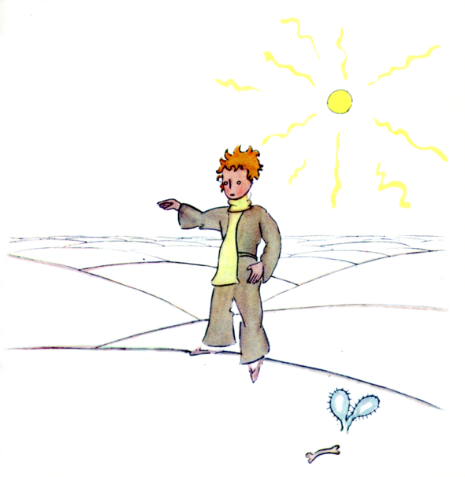
うまくいおうとして、ちょっとウソをついてしまうってことがある。あかりつけのことも、ぜんぶありのままってわけじゃないんだ。そのせいで、なにも知らないひとに、ぼくらの星のことをへんにおしえてしまったかもしれない。ちきゅうのほんのちょっとしか、にんげんのものじゃない。ちきゅうにすんでる20おくのひとに、まっすぐ立ってもらって、
でも、おとなのひとにこんなことをいっても、やっぱりしんじない。いろんなところが、じぶんたちのものだっておもいたいんだ。じぶんたちはバオバブくらいでっかいものなんだって、かんがえてる。だから、そのひとたちに、「かぞえてみてよ」って、いってごらん。すうじが大すきだから、きっとうれしがる。でも、みんなはそんなつまらないことで、じかんをつぶさないように。くだらない。みんな、ぼくをしんじて。
王子くんはちきゅうについたんだけど、そのとき、ひとのすがたがどこにもなくて、びっくりした。それでもう、星をまちがえたのかなって、あせってきた。すると、すなのなかで、月の色した輪っかが、もぞもぞうごいた。
「こんばんは。」と王子くんがとりあえずいってみると、
「こんばんは。」とヘビがいった。
「ぼく、どの星におっこちたの？」と王子くんがきくと、
「ちきゅうの、アフリカ。」とヘビがこたえた。
「えっ、まさか、ちきゅうにはひとがいないの？」
「ここは、さばく。さばくに、ひとはいない。ちきゅうは、ひろい。」とヘビはいった。
王子くんは石ころにすわって、目を空のほうへやった。
「星がきらきらしてるのは、みんなが、ふとしたときに、じぶんの星を見つけられるようにするためなのかな。ほら、ぼくの星！ まうえにあるやつ……でも、ほんとにとおいなあ！」
「きれいだ。」とヘビはいう。「ここへ、なにしに？」
「花とうまくいってなくて。」と王子くんはいった。
「ふうん。」とヘビはいった。
それで、ふたりはだんまり。
「ひとはどこにいるの？」と、しばらくしてから王子くんがきいた。「さばくだと、ちょっとひとりぼっちだし。」
「ひとのなかでも、ひとりぼっちだ。」とヘビはいった。
王子くんは、ヘビをじっと見つめた。
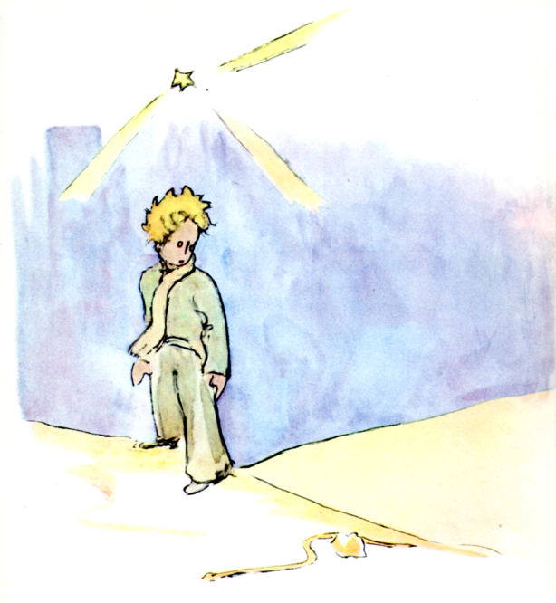
〈「きみって、へんないきものだね。」と、しばらくしてから王子くんがいった。「ゆびみたいに、ほっそりしてる……」〉
「きみって、へんないきものだね。」と、しばらくしてから王子くんがいった。「ゆびみたいに、ほっそりしてる……」
「でもおれは、王さまのゆびより、つよい。」とヘビはいった。
王子くんはにっこりした。
「きみ、そんなにつよくないよ……手も足もなくて……たびだって、できないよ……」
「おれは船よりも、ずっととおくへ、きみをつれてゆける。」とヘビはいった。
ヘビは王子くんのくるぶしに、ぐるりとまきついた。金のうでわみたいに。
「おれがついたものは、もといた土にかえる。」と、ことばをつづける。「でも、きみはけがれていない。それに、きみは星から来た……」
王子くんは、なにもへんじをしなかった。
「きみを見てると、かわいそうになる。このかたい岩でできたちきゅうの上で、力もないきみ。おれなら、たすけになれる。じぶんの星がなつかしくなったら、いつでも。あと……」
「もう！ わかったよ。」と王子くんはいった。「でも、なんでずっと、それとなくいうわけ？」
「おれそのものが、それのこたえだ。」とヘビはいった。
それで、ふたりはだんまり。
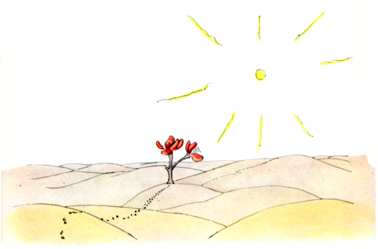
王子くんは、さばくをわたったけど、たった１りんの花に出くわしただけだった。花びらがみっつだけの花で、なんのとりえもない花……
「こんにちは。」と王子くんがいうと、
「こんにちは。」と花がいった。
「ひとはどこにいますか？」と、王子くんはていねいにたずねた。
花は、いつだか、ぎょうれつがとおるのを見たことがあった。
「ひと？ いるとおもう。６にんか７にん。なん年かまえに見かけたから。でも、どこであえるか、ぜんぜんわかんない。風まかせだもん。あのひとたち、根っこがないの。それってずいぶんふべんね。」
「さようなら。」と王子くんがいうと、
「さようなら。」と花がいった。
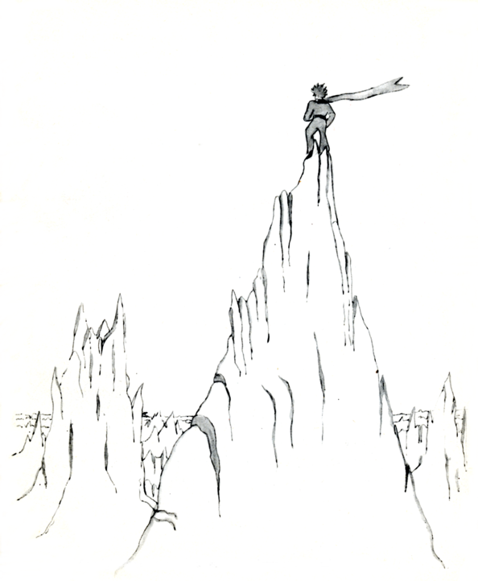
〈ここ、かさかさしてるし、とげとげしてるし、ひりひりする。〉
王子くんは、たかい山にのぼった。それまでその子の知っていた山といえば、たけがひざまでしかない火山がみっつだけ。しかも、きえた火山はこしかけにつかっていたくらいだ。だから、その子はこんなふうにかんがえた。『こんなにたかい山からなら、ひと目で、この星ぜんたいと、ひとみんなを見とおせるはず……』でも、見えたのは、するどくとがった岩山ばかりだった。
「こんにちは。」と、その子がとりあえずいってみると、
「こんにちは……こんにちは……こんにちは……」と、やまびこがへんじをする。
「なんて名まえ？」と王子くんがいうと、
「なんて名まえ……なんて名まえ……なんて名まえ……」と、やまびこがへんじをする。
「友だちになってよ、ひとりぼっちなんだ。」と、その子がいうと、
「ひとりぼっち……ひとりぼっち……ひとりぼっち……」と、やまびこがへんじをする。
『もう、へんな星！』と、その子はそのときおもった。『ここ、かさかさしてるし、とげとげしてるし、ひりひりする。ひとって、おもいえがく力がないんじゃないの。だれかのいったことをくりかえす……ぼくんちにある花は、いっつもむこうからしゃべりかけてくるのに……』
さて、王子くんが、さばくを、岩山を、雪の上をこえて、ながながとあゆんでいくと、ようやく１本の道に行きついた。そして道をゆけば、すんなりひとのいるところへたどりつく。
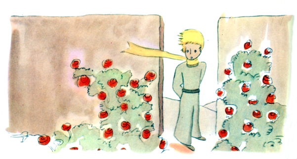
「こんにちは。」と、その子はいった。
そこは、バラの花がさきそろう
「こんにちは。」と、バラがいっせいにこたえた。
王子くんは、たくさんのバラをながめた。みんな、その子の花にそっくりだった。
「きみたち、なんて名まえ？」と、王子くんはぽかんとしながら、きいた。
「わたしたち、バラっていうの。」と、バラがいっせいにこたえた。
「えっ！」って、王子くんはいって……
そのあと、じぶんがみじめにおもえてきた。その子の花は、うちゅうにじぶんとおなじ花なんてないって、その子にしゃべっていた。それがどうだろう、このひとつの庭だけでも、にたようなものがぜんぶで、5000ある！
その子はおもった。『あの子、こんなのを見たら、すねちゃうだろうな……きっと、とんでもないほど、えへんえへんってやって、かれたふりして、バカにされないようにするだろうし、そうしたら、ぼくは、手あてをするふりをしなくちゃいけなくなる。だって、しなけりゃあの子、ぼくへのあてつけで、ほんとにじぶんをからしちゃうよ……』
それからこうもかんがえた。『ひとつしかない花があるから、じぶんはぜいたくなんだとおもってた。でも、ほんとにあったのは、ありきたりのバラ。それと、ひざたけの火山みっつで、そのうちひとつは、たぶん、ずっときえたまま。これじゃあ、りっぱでえらいあるじにはなれない……』そうして、草むらにつっぷして、なみだをながした。
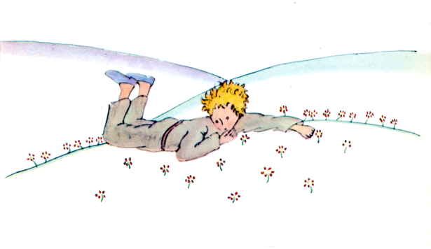
〈そうして、草むらにつっぷして、なみだをながした。〉
キツネが出てきたのは、そのときだった。
「こんにちは。」とキツネがいった。
「こんにちは。」と王子くんはていねいにへんじをして、ふりかえったけど、なんにもいなかった。
「ここだよ。」と、こえがきこえる。「リンゴの木の下……」
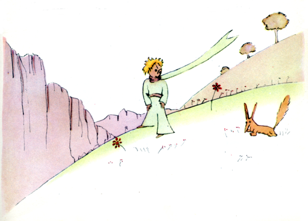
「きみ、だれ？」と王子くんはいった。「とってもかわいいね……」
「おいら、キツネ。」とキツネはこたえた。
「こっちにきて、いっしょにあそぼうよ。」と王子くんがさそった。「ぼく、ひどくせつないんだ……」
「いっしょにはあそべない。」とキツネはいった。「おいら、きみになつけられてないもん。」
「あ！ ごめん。」と王子くんはいった。
でも、じっくりかんがえてみて、こうつけくわえた。
「〈なつける〉って、どういうこと？」
「このあたりのひとじゃないね。」とキツネがいった。「なにかさがしてるの？」
「ひとをさがしてる。」と王子くんはいった。「〈なつける〉って、どういうこと？」
「ひと。」とキツネがいった。「あいつら、てっぽうをもって、かりをする。いいめいわくだよ！ ニワトリもかってるけど、それだけがあいつらのとりえなんだ。ニワトリはさがしてる？」
「ううん。」と王子くんはいった。「友だちをさがしてる。〈なつける〉って、どういうこと？」
「もうだれもわすれちゃったけど、」とキツネはいう。「〈きずなをつくる〉ってことだよ……」
「きずなをつくる？」
「そうなんだ。」とキツネはいう。「おいらにしてみりゃ、きみはほかのおとこの子10まんにんと、なんのかわりもない。きみがいなきゃダメだってこともない。きみだって、おいらがいなきゃダメだってことも、たぶんない。きみにしてみりゃ、おいらはほかのキツネ10まんびきと、なんのかわりもないから。でも、きみがおいらをなつけたら、おいらたちはおたがい、あいてにいてほしい、っておもうようになる。きみは、おいらにとって、せかいにひとりだけになる。おいらも、きみにとって、せかいで１ぴきだけになる……」
「わかってきた。」と王子くんはいった。「いちりんの花があるんだけど……あの子は、ぼくをなつけたんだとおもう……」
「かもね。」とキツネはいった。「ちきゅうじゃ、どんなことだっておこるから……」
「えっ！ ちきゅうの話じゃないよ。」と王子くんはいった。
キツネはとってもふしぎがった。
「ちがう星の話？」
「うん。」
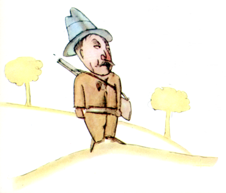
「その星、かりうどはいる？」
「いない。」
「いいねえ！ ニワトリは？」
「いない。」
「そううまくはいかないか。」とキツネはためいきをついた。
さて、キツネはもとの話にもどって、
「おいらのまいにち、いつもおなじことのくりかえし。おいらはニワトリをおいかけ、ひとはおいらをおいかける。ニワトリはどれもみんなおんなじだし、ひとだってだれもみんなおんなじ。だから、おいら、ちょっとうんざりしてる。でも、きみがおいらをなつけるんなら、おいらのまいにちは、ひかりがあふれたみたいになる。おいらは、ある足音を、ほかのどんなやつとも聞きわけられるようになる。ほかの音なら、おいら
キツネはだんまりして、王子くんをじっと見つめて、
「おねがい……おいらをなつけておくれ！」といった。
「よろこんで。」と王子くんはへんじをした。「でもあんまりじかんがないんだ。友だちを見つけて、たくさんのことを知らなきゃなんない。」
「自分のなつけたものしか、わからないよ。」とキツネはいった。「ひとは、ひまがぜんぜんないから、なんにもわからない。ものうりのところで、できあがったものだけをかうんだ。でも、友だちをうるやつなんて、どこにもいないから、ひとには、友だちってものがちっともいない。友だちがほしいなら、おいらをなつけてくれ！」
「なにをすればいいの？」と王子くんはいった。
「気ながにやらなきゃいけない。」とキツネはこたえる。「まずは、おいらからちょっとはなれたところにすわる。たとえば、その草むらにね。おいらはきみをよこ目で見て、きみはなにもしゃべらない。ことばは、すれちがいのもとなんだ。でも、１日、１日、ちょっとずつそばにすわってもいいようになる……」
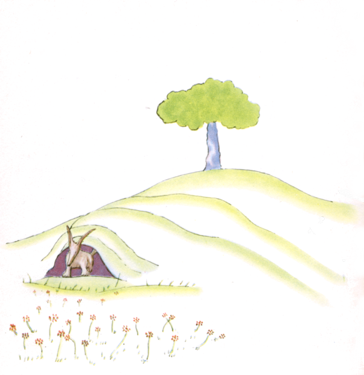
〈そうだね、きみがごごの４じに来るなら、３じにはもう、おいら、うきうきしてくる。〉
あくる日、王子くんはまたやってきた。
「おんなじじかんに、来たほうがいいよ。」とキツネはいった。「そうだね、きみがごごの４じに来るなら、３じにはもう、おいら、うきうきしてくる。それからじかんがどんどんすすむと、ますますうきうきしてるおいらがいて、４じになるころには、ただもう、そわそわどきどき。そうやって、おいらは、しあわせをかみしめるんだ！ でも、でたらめなじかんにくるなら、いつ心をおめかししていいんだか、わからない……きまりごとがいるんだよ。」
「きまりごとって、なに？」と王子くんはいった。
「これもだれもわすれちゃったけど、」とキツネはいう。「１日をほかの１日と、１じかんをほかの１じかんと、べつのものにしてしまうもののことなんだ。たとえば、おいらをねらうかりうどにも、きまりごとがある。あいつら、木ようは村のむすめとダンスをするんだ。だから、木ようはすっごくいい日！ おいらはブドウばたけまでぶらぶらあるいていく。もし、かりうどがじかんをきめずにダンスしてたら、どの日もみんなおんなじようになって、おいらの心やすまる日がすこしもなくなる。」
こんなふうにして、王子くんはキツネをなつけた。そして、そろそろ行かなきゃならなくなった。
「はあ。」とキツネはいった。「……なみだがでちゃう。」
「きみのせいだよ。」と王子くんはいった。「ぼくは、つらいのはぜったいいやなんだ。でも、きみは、ぼくになつけてほしかったんでしょ……」
「そうだよ。」とキツネはいった。
「でも、いまにもなきそうじゃないか！」と王子くんはいった。
「そうだよ。」とキツネはいった。
「じゃあ、きみにはなんのいいこともないじゃない！」
「いいことはあったよ。」とキツネはいった。「小むぎの色のおかげで。」
それからこうつづけた。
「バラの庭に行ってみなよ。きみの花が、せかいにひとつだけってことがわかるはず。おいらにさよならをいいにもどってきたら、ひみつをひとつおしえてあげる。」
王子くんは、またバラの庭に行った。
「きみたちは、ぼくのバラとはちっともにていない。きみたちは、まだなんでもない。」と、その子はたくさんのバラにいった。「だれもきみたちをなつけてないし、きみたちもだれひとりなつけていない。きみたちは、であったときのぼくのキツネとおんなじ。あの子は、ほかのキツネ10まんびきと、なんのかわりもなかった。でも、ぼくがあの子を友だちにしたから、もういまでは、あの子はせかいにただ１ぴきだけ。」
するとたくさんのバラは、ばつがわるそうにした。
「きみたちはきれいだけど、からっぽだ。」と、その子はつづける。「きみたちのために死ぬことなんてできない。もちろん、ぼくの花だって、ふつうにとおりすがったひとから見れば、きみたちとおんなじなんだとおもう。でも、あの子はいるだけで、きみたちぜんぶよりも、だいじなんだ。だって、ぼくが水をやったのは、あの子。だって、ぼくがガラスのおおいに入れたのは、あの子。だって、ぼくがついたてでまもったのは、あの子。だって、ぼくが毛虫をつぶしてやったのも（２、３びき、チョウチョにするためにのこしたけど）、あの子。だって、ぼくが、もんくとか、じまんとか、たまにだんまりだってきいてやったのは、あの子なんだ。だって、あの子はぼくのバラなんだもん。」
それから、その子はキツネのところへもどってきた。
「さようなら。」と、その子がいうと……
「さようなら。」とキツネがいった。「おいらのひみつだけど、すっごくかんたんなことなんだ。心でなくちゃ、よく見えない。もののなかみは、目では見えない、ってこと。」
「もののなかみは、目では見えない。」と、王子くんはもういちどくりかえした。わすれないように。
「バラのためになくしたじかんが、きみのバラをそんなにもだいじなものにしたんだ。」
「バラのためになくしたじかん……」と、王子くんはいった。わすれないように。
「ひとは、ほんとのことを、わすれてしまった。」とキツネはいった。「でも、きみはわすれちゃいけない。きみは、じぶんのなつけたものに、いつでもなにかをかえさなくちゃいけない。きみは、きみのバラに、なにかをかえすんだ……」
「ぼくは、ぼくのバラになにかをかえす……」と、王子くんはもういちどくりかえした。わすれないように。
「こんにちは。」と王子くんがいうと、
「こんにちは。」とポイントがかりがいった。
「ここでなにしてるの？」と王子くんがいうと、
「おきゃくを1000にんずつわけてるんだ。」とポイントがかりがいった。「きかんしゃにおきゃくがのってて、そいつをおまえは右だ、おまえは左だって、やってくんだよ。」
すると、きかんしゃが、ぴかっ、びゅん、かみなりみたいに、ごろごろごろ。ポイントがかりのいるたてものがゆれた。
「ずいぶんいそいでるね。」と王子くんはいった。「なにかさがしてるの？」
「それは、うごかしてるやつだって、わからんよ。」とポイントがかりはいった。
すると、こんどはぎゃくむきに、ぴかっ、びゅん、ごろごろごろ。
「もうもどってきたの？」と王子くんがきくと……
「おんなじのじゃないよ。」とポイントがかりがいった。「いれかえだ。」
「じぶんのいるところが気にいらないの？」
「ひとは、じぶんのいるところが、ぜったい気にいらないんだ。」とポイントがかりがいった。
すると、またまた、ぴかっ、びゅん、ごろごろごろ。
「さっきのおきゃくをおいかけてるの？」と王子くんはきいた。
「だれもおっかけてなんかないよ。」とポイントがかりはいった。「なかでねてるか、あくびをしてる。子どもたちだけが、まどガラスに鼻をおしつけてる。」
「子どもだけが、じぶんのさがしものがわかってるんだね。」と王子くんはいった。「パッチワークのにんぎょうにじかんをなくして、それがだいじなものになって、だからそれをとりあげたら、ないちゃうんだ……」
「うらやましいよ。」とポイントがかりはいった。
「こんにちは。」と、王子くんがいうと、
「こんにちは。」と、ものうりがいった。
ものうりはクスリをうっていた。そのクスリは、のどのからからをおさえるようにできていて、１しゅうかんにひとつぶで、もう、のみたいっておもわなくなるんだ。
「どうして、そんなのをうるの？」と王子くんはいった。
「むだなじかんをはぶけるからだ。」と、ものうりはいった。「はかせがかぞえたんだけど、１しゅうかんに53ぷんもむだがはぶける。」
「その53ぷんをどうするの？」
「したいことをするんだ……」
王子くんはかんがえる。『ぼく、53ぷんもじゆうになるんなら、ゆっくりゆーっくり、水くみ場にあるいていくんだけど……』
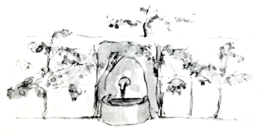
おかしくなって、さばくに下りてから、８日め。ぼくは、ものうりの話をききながら、ほんのすこしだけのこっていた水を、ぐいとのみほした。
「へえ！」と、ぼくは王子くんにいった。「たいへんけっこうな思いで話だけど、まだひこうきがなおってないし、もう、のむものもない。ぼくも、ゆっくりゆーっくり水くみ場にあるいていけると、うれしいんだけど！」
「友だちのキツネが……」と、その子がいったけど、
「いいかい、ぼうや。もうキツネの話をしてるばあいじゃないんだ！」
「どうして？」
「のどがからからで、もうすぐ死んじゃうんだよ……」
その子は、ぼくのいいぶんがわからなくて、こういった。
「友だちになるっていいことなんだよ、死んじゃうにしても。ぼく、キツネと友だちになれてすっごくうれしくて……」
ぼくはかんがえた。『この子、あぶないってことに気づいてない。はらぺこにも、からからにも、ぜったいならないんだ。ちょっとお日さまがあれば、それでじゅうぶん……』
ところが、その子はぼくを見つめて、そのかんがえにへんじをしたんだ。
「ぼくだって、のどはからからだよ……
ぼくは、だるそうにからだをうごかした。井戸をさがすなんて、ばかばかしい。はてもしれない、このさばくで。それなのに、そう、ぼくたちはあるきだした。
ずーっと、だんまりあるいていくと、夜がおちて、星がぴかぴかしはじめた。ぼくは、とろんとしながら、星をながめた。のどがからからで、ぼうっとする。王子くんのことばがうかんでは、ぐるぐるまわる。
「じゃあ、きみものどがからから？」と、ぼくはきいた。
でも、きいたことにはこたえず、その子はこういっただけだった。
「水は、心にもいいんだよ……」
ぼくは、どういうことかわからなかったけど、なにもいわなかった……きかないほうがいいんだと、よくわかっていた。
その子はへとへとだった。すわりこむ。ぼくもその子のそばにすわりこむ。しーんとしたあと、その子はこうもいった。
「星がきれいなのは、見えない花があるから……」
ぼくは〈そうだね〉とへんじをして、月のもと、だんまり、すなのでこぼこをながめる。
「さばくは、うつくしい。」と、その子はことばをつづけた……
まさに、そのとおりだった。ぼくはいつでも、さばくがこいしかった。なにも見えない。なにもきこえない。それでも、なにかが、しんとするなかにも、かがやいている……
王子くんはいった。「さばくがうつくしいのは、どこかに井戸をかくしてるから……」
ぼくは、どきっとした。ふいに、なぜ、すながかがやいてるのか、そのなぞがとけたんだ。ぼくが、ちいさなおとこの子だったころ、古いやしきにすんでいた。そのやしきのいいつたえでは、たからものがどこかにかくされているらしい。もちろん、だれひとりとして、それを見つけてないし、きっと、さがすひとさえいなかった。でも、そのいいつたえのおかげで、その家まるごと、まほうにかかったんだ。その家に、かくされたひみつがある。どこか、おくそこに……
「そうか。」と、ぼくは王子くんにいった。「あの家とか、あの星とか、あのさばくが気になるのは、そう、なにかをうつくしくするものは、目に見えないんだ！」
「うれしいよ。」と、その子はいった。「きみも、ぼくのキツネとおなじこといってる。」
王子くんがねつくと、ぼくはすぐさま、その子をだっこして、またあるきはじめた。ぼくは、むねがいっぱいだった。なんだか、こわれやすいたからものを、はこんでるみたいだ。きっと、これだけこわれやすいものは、ちきゅうのどこにもない、とさえかんじる。ぼくは、月あかりのもと、じっと見た。その子の青白いおでこ、つむった目、風にゆれるふさふさのかみの毛。ぼくはこうおもう。ここで見ているのは、ただの〈から〉。いちばんだいじなものは、目に見えない……
ちょっとくちびるがあいて、その子がほほえみそうになった。そのとき、ぼくはつづけて、こうかんがえていた。『ねむってる王子くんに、こんなにもぐっとくるのは、この子が花にまっすぐだから。花のすがたが、この子のなかで、ねむってても、ランプのほのおみたく、きらきらしてるから……』そのとき、これこそ、もっともっとこわれやすいものなんだ、って気がついた。この火を、しっかりまもらなくちゃいけない。風がびゅんとふけば、それだけできえてしまう……
そうして、そんなふうにあるくうち、ぼくは井戸を見つけた。夜あけのことだった。
王子くんはいった。「ひとって、はやいきかんしゃにむちゅうだけど、じぶんのさがしものはわかってない。ということは、そわそわして、ぐるぐるまわってるだけ。」
さらにつづける。
「そんなことしなくていいのに……」
ぼくたちが行きあたった井戸は、どうもサハラさばくの井戸っぽくはなかった。さばくの井戸っていうのは、さばくのなかで、かんたんな穴がぽこっとあいてるだけ。ここにあるのは、どうも村の井戸っぽい。でも、村なんてどこにもないし、ぼくは、ゆめかとおもった。
「おかしい。」と、ぼくは王子くんにいった。「みんなそろってる。くるくる、おけ、ロープ……」
その子はわらって、ロープを手にとり、くるくるをまわした。するときぃきぃと音がした。風にごぶさたしてる、かざみどりみたいな音だった。
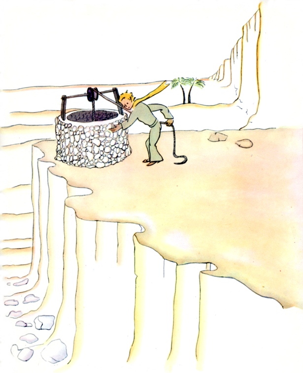
〈その子はわらって、ロープを手にとり、くるくるをまわした。〉
「きこえるよね。」と王子くんはいった。「ぼくらのおかげで、この井戸がめざめて、うたをうたってる……」
ぼくは、その子にむりをさせたくなかった。
「かして。」と、ぼくはいった。「きみには、きつすぎる。」
そろりそろり、ぼくは、おけをふちのところまでひっぱり上げて、たおれないよう、しっかりおいた。ぼくの耳では、くるくるがうたいつづけていて、まだゆらゆらしてる水の上では、お日さまがふるえて見えた。
「この水がほしい。」と王子くんがいった。「のませてちょうだい……」
そのとき、ぼくはわかった。その子のさがしものが！
ぼくは、その子の口もとまで、おけをもちあげた。その子は、目をつむりながら、ごくっとのんだ。おいわいの日みたいに、気もちよかった。その水は、ただののみものとは、まったくべつのものだった。この水があるのは、星空のしたをあるいて、くるくるのうたがあって、ぼくがうでをふりしぼったからこそなんだ。この水は、心にいい。プレゼントみたいだ。ぼくが、ちいさなおとこの子だったころ。クリスマスツリーがきらきらしてて、夜ミサのおんがくがあって、みんな気もちよくにこにこしてたからこそ、ぼくのもらった、あのクリスマスプレゼントは、あんなふうに、きらきらかがやいていたんだ。
王子くんがいった。「きみんとこのひとは、5000本ものバラをひとつの庭でそだててる……で、さがしものは見つからない……」
「見つからないね。」と、ぼくはうなずく……
「それなのに、さがしものは、なにか１りんのバラとか、ちょっとの水とかのなかに見つかったりする……」
「そのとおり。」と、ぼくはうなずく。
王子くんはつづける。
「でも、目じゃまっくらだ。心でさがさなくちゃいけない。」
ぼくは水をのんだ。しんこきゅうする。さばくは、夜あけで、はちみつ色だった。ぼくもうれしかった、はちみつ色だったから。もう、むりをしなくてもいいんだ……
「ねぇ、やくそくをまもってよ。」と、王子くんはぽつりといって、もういちど、ぼくのそばにすわった。
「なんのやくそく？」
「ほら……ヒツジのくちわ……ぼくは、花におかえししなくちゃなんないんだ！」
ぼくはポケットから、ためしにかいた絵をとりだした。王子くんはそれを見ると、わらいながら、こういった。
「きみのバオバブ、ちょっとキャベツっぽい……」
「えっ！」
バオバブはいいできだとおもっていたのに！
「きみのキツネ……この耳……ちょっとツノっぽい……ながすぎるよ！」
その子は、からからとわらった。
「そんなこといわないでよ、ぼうや。ぼくは、なかの見えないボアと、なかの見えるボアしか、絵ってものをしらないんだ。」
「ううん、それでいいの。子どもはわかってる。」
そんなわけで、ぼくは、えんぴつでくちわをかいた。それで、その子にあげたんだけど、そのとき、なぜだか心がくるしくなった。
「ねぇ、ぼくにかくれて、なにかしようとしてる……？」
でも、その子はそれにこたえず、こう、ぼくにいった。
「ほら、ぼく、ちきゅうにおっこちて……あしたで１年になるんだ……」
そのあと、だんまりしてから、
「ここのちかくにおっこちたんだ……」
といって、かおをまっ赤にした。
そのとき、また、なぜだかわからないけど、へんにかなしい気もちになった。それなのに、ぼくはきいてみたくなったんだ。
「じゃあ、１しゅうかんまえ、ぼくときみがであったあのあさ、きみがあんなふうに、ひとのすむところのはるかかなた、ひとりっきりであるいていたのは、たまたまじゃないってこと
きみは、おっこちたところに、もどってるんだね？」王子くんは、もっと赤くなった。
ぼくは、ためらいつつもつづけた。
「もしかして、１年たったら……？」
王子くんは、またまたまっ赤になった。しつもんにはこたえなかったけど、でも、赤くなるってことは、〈うん〉っていってるのとおんなじってことだから、だから。
「ねぇ！」と、ぼくはいった。「だいじょうぶ……？」
それでも、その子はこたえなかった。
「きみは、もう、やることをやらなくちゃいけない。じぶんのからくりのところへかえらなきゃいけない。ぼくは、ここでまってる。あしたの夜、かえってきてよ……」
どうしても、ぼくはおちつけなかった。キツネをおもいだしたんだ。だれであっても、なつけられたら、ちょっとないてしまうものなのかもしれない……
井戸のそばに、こわれた古い石のかべがあった。つぎの日の夕がた、ぼくがやることをやってもどってくると、とおくのほうに、王子くんがそのかべの上にすわって、足をぶらんとさせているのが見えた。その子のはなしごえもきこえてくる。
「じゃあ、きみはおぼえてないの？」と、その子はいった。「ちがうって、ここは！」
その子のことばに、なにかがへんじをしているみたいだった。
「そうだけど！ そう、きょうなんだけど、ちがうんだって、ここじゃないんだ……」
ぼくは、かべのほうへあるいていった。けれど、なにも見えないし、なにもきこえない。それでも、王子くんはまたことばをかえしていた。
「……そうだよ。さばくについた、ぼくの足あとが、どこからはじまってるかわかるでしょ。きみはまつだけでいいの。ぼくは、きょうの夜、そこにいるから。」
ぼくは、かべから20メートルのところまできたけど、まだなにも見えない。
王子くんは、だんまりしたあと、もういちどいった。
「きみのどくは、だいじょうぶなの？ ほんとに、じわじわくるしまなくてもいいんだよね？」
ぼくは心がくるしくなって、たちどまったけれど、どうしてなのか、やっぱりわからなかった。
「とにかく、もう行ってよ。」と、その子はいった。「……ぼくは下りたいんだ！」
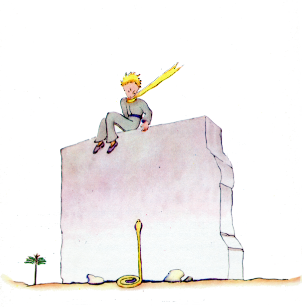
〈「とにかく、もう行ってよ。」と、その子はいった。「……ぼくは下りたいんだ！」〉
そのとき、ぼくは気になって、かべの下のあたりをのぞきこんでみた。ぼくは、とびあがった。なんと、そこにいたのは、王子くんのほうへシャーっとかまえている、きいろいヘビが１ぴき。ひとを30びょうでころしてしまうやつだ。ぼくはピストルをうとうと、けんめいにポケットのなかをさぐりながら、かけ足でむかった。だけど、ぼくのたてた音に気づいて、ヘビはすなのなかへ、ふんすいがやむみたいに、しゅるしゅるとひっこんでしまった。それからは、いそぐようでもなく、石のあいだをカシャカシャとかるい音をたてながら、すりぬけていった。
ぼくは、なんとかかべまでいって、かろうじてその子をうけとめた。ぼくのぼうや、ぼくの王子くん。かおが、雪のように青白い。
「いったいどういうこと！ さっき、きみ、ヘビとしゃべってたよね！」
ぼくは、その子のいつもつけているマフラーをほどいた。こめかみをしめらせ、水をのませた。とにかく、ぼくはもうなにもきけなかった。その子は、おもいつめたようすで、ぼくのことをじっと見て、ぼくのくびにすがりついた。その子のしんぞうのどきどきがつたわってくる。てっぽうにうたれて死んでゆく鳥みたいに、よわよわしい。その子はいう。
「うれしいよ、きみは、じぶんのからくりにたりないものを見つけたんだね。もう、きみんちにかえってゆけるね……」
「どうして、わかるの？」
ぼくは、ちょうど知らせにくるところだった。かんがえてたよりも、やるべきことがうまくいったんだ、って。
その子は、ぼくのきいたことにはこたえなかったけど、こうつづけたんだ。
「ぼくもね、きょう、ぼくんちにかえるんだ……」
それから、さみしそうに、
「はるかにずっととおいところ……はるかにずっとむずかしいけど……」
ぼくは、ひしひしとかんじた。なにか、とんでもないことがおころうとしている。ぼくは、その子をぎゅっとだきしめた。ちいさな子どもにするみたいに。なのに、それなのに、ぼくには、その子がするっとぬけでて、穴におちてしまうような気がした。ぼくには、それをとめる力もない……
その子は、とおい目で、なにかをちゃんと見ていた。
「きみのヒツジがあるし、ヒツジのためのはこもあるし、くちわもある……」
そういって、その子は、さみしそうにほほえんだ。
ぼくは、ただじっとしていた。その子のからだが、ちょっとずつほてっていくのがわかった。
「ぼうや、こわいんだね……」
こわいのは、あたりまえなのに！ でも、その子は、そっとわらって、
「夜になれば、はるかにずっとこわくなる……」
もうどうしようもないんだっておもうと、ぼくはまた、ぞっとした。ぼくは、このわらいごえが、もうぜったいにきけないなんて、どうしても、うけいれることができなかった。このわらいごえが、ぼくにとって、さばくのなかの水くみ場のようなものだったんだ。
「ぼうや、ぼくはもっと、きみのわらいごえがききたいよ……」
でも、その子はいった。
「夜がくれば、１年になる。ぼくの星が、ちょうど、１年まえにおっこちたところの上にくるんだ……」
「ぼうや、これはわるいゆめなんだろ？ ヘビのことも、会うことも、星のことも……」
でも、その子は、ぼくのきいたことにこたえず、こういった。
「だいじなものっていうのは、見えないんだ……」
「そうだね……」
「それは花もおんなじ。きみがどこかの星にある花をすきになったら、夜、空を見るのがここちよくなる。どの星にもみんな、花がさいてるんだ……」
「そうだね……」
「それは水もおんなじ。きみがぼくにのませてくれた水は、まるで
「そうだね……」
「きみは、夜になると、星空をながめる。ぼくんちはちいさすぎるから、どれだかおしえてあげられないんだけど、かえって、そのほうがいいんだ。ぼくの星っていうのは、きみにとっては、あのたくさんのうちのひとつ。だから、どんな星だって、きみは見るのがすきになる……みんなみんな、きみの友だちになる。そうして、ぼくはきみに、おくりものをするんだよ……」
その子は、からからとわらった。
「ねぇ、ぼうや、ぼうや。ぼくは、そのわらいごえが大すきなんだ！」
「うん、それがぼくのおくりもの……水とおんなじ……」
「どういうこと？」
「ひとには、みんなそれぞれにとっての星があるんだ。たびびとには、星は目じるし。ほかのひとにとっては、ほんのちいさなあかりにすぎない。あたまのいいひとにとっては、しらべるものだし、あのしごとにんげんにとっては、お金のもと。でも、そういう星だけど、どの星もみんな、なんにもいわない。で、きみにも、だれともちがう星があるんだよ……」
「どういう、こと？」
「夜、空をながめたとき、そのどれかにぼくがすんでるんだから、そのどれかでぼくがわらってるんだから、きみにとっては、まるで星みんながわらってるみたいになる。きみには、わらってくれる星空があるってこと！」
その子は、からからとわらった。
「だから、きみの心がいえたら（ひとの心はいつかはいえるものだから）、きみは、ぼくとであえてよかったっておもうよ。きみは、いつでもぼくの友だち。きみは、ぼくといっしょにわらいたくてたまらない。だから、きみはときどき、まどをあける、こんなふうに、たのしくなりたくて……だから、きみの友だちはびっくりするだろうね、じぶんのまえで、きみが空を見ながらわらってるんだもん。そうしたら、きみはこんなふうにいう。『そうだ、星空は、いつだってぼくをわらわせてくれる！』だから、そのひとたちは、きみのあたまがおかしくなったとおもう。ぼくはきみに、とってもたちのわるいいたずらをするってわけ……」
そして、からからとわらった。
「星空のかわりに、からからわらう、ちいさなすずを、たくさんあげたみたいなもんだね……」
からからとわらった。それからまた、ちゃんとしたこえで。
「夜には……だから……来ないで。」
「きみを、ひとりにはしない。」
「ぼく、ぼろぼろに見えるけど……ちょっと死にそうに見えるけど、そういうものなんだ。見に来ないで。そんなことしなくていいから……」
「きみを、ひとりにはしない。」
でも、その子は気になるようだった。
「あのね……ヘビがいるんだよ。きみにかみつくといけないから……ヘビっていうのは、すぐおそいかかるから、ほしいままに、かみつくかもしれない……」
「きみを、ひとりにはしない。」
でも、ふっと、その子はおちついて、
「そっか、どくは、またかみつくときには、もうなくなってるんだ……」
あの夜、ぼくは、あの子がまたあるきはじめたことに気がつかなかった。あの子は、音もなくぬけだしていた。ぼくがなんとかおいつくと、あの子は、わき目もふらず、はや足であるいていた。あの子はただ、こういった。
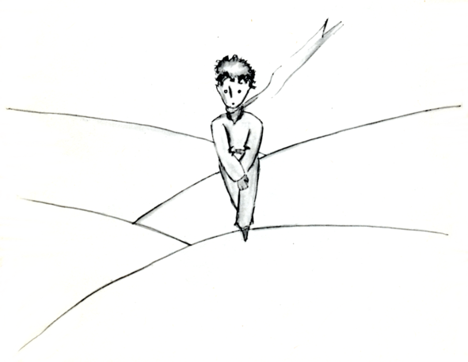
「あっ、来たんだ……」
それから、あの子はぼくの手をとったんだけど、またなやみだした。
「だめだよ。きみがきずつくだけだよ。ぼくは死んだみたいに見えるけど、ほんとうはそうじゃない……」
ぼくは、なにもいわない。
「わかるよね。とおすぎるんだ。ぼくは、このからだをもっていけないんだ。おもすぎるんだ。」
ぼくは、なにもいわない。
「でもそれは、ぬぎすてた、ぬけがらとおんなじ。ぬけがらなら、せつなくはない……」
ぼくは、なにもいわない。
あの子は、ちょっとしずんだ。でもまた、こえをふりしぼった。
「すてきなこと、だよね。ぼくも、星をながめるよ。星はみんな、さびたくるくるのついた井戸なんだ。星はみんな、ぼくに、のむものをそそいでくれる……」
ぼくは、なにもいわない。
「すっごくたのしい！ きみには５おくのすずがあって、ぼくには５おくの水くみ場がある……」
そしてその子も、なにもいわない。だって、ないていたんだから……
「ここだよ。ひとりで、あるかせて。」
そういって、あの子はすわりこんだ。こわかったんだ。あの子は、こうつづけた。

「わかるよね……ぼくの花に……ぼくは、かえさなきゃいけないんだ！ それに、あの子はすっごくかよわい！ それに、すっごくむじゃき！ まわりからみをまもるのは、つまらない、よっつのトゲ……」
ぼくもすわりこんだ。もう立ってはいられなかった。あの子はいった。
「ただ……それだけ……」
あの子はちょっとためらって、そのあと立ち上がった。１ぽだけ、まえにすすむ。ぼくはうごけなかった。
なにかが、きいろくひかっただけだった。くるぶしのちかく。あの子のうごきが、いっしゅんだけとまった。こえもなかった。あの子は、そうっとたおれた。木がたおれるようだった。音さえもしなかった。すなのせいだった。
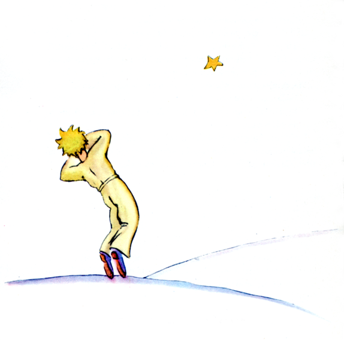
〈あの子は、そうっとたおれた。木がたおれるようだった。〉
いまとなっては、あれももう、６年まえのこと。……ぼくは、このできごとを、いままでだれにもはなさなかった。ひこうきなかまは、ぼくのかおをみて、ぶじにかえってきたことをよろこんでくれた。ぼくは、せつなかったけど、あいつらには、こういった。「いやあ、こりごりだよ……」
もういまでは、ぼくの心も、ちょっといえている。その、つまり……まったくってわけじゃない。でも、ぼくにはよくわかっている。あの子は、じぶんの星にかえったんだ。だって、夜があけても、あの子のからだは、どこにも見あたらなかったから。からだは、そんなにおもくなかったんだろう……。そして、ぼくは夜、星に耳をかたむけるのがすきになった。５おくのすずとおんなじなんだ……
でも、ほんとに、とんでもないこともおこってしまった。くちわをあの王子くんにかいてあげたんだけど、ぼくはそれに、かわのひもをかきたすのをわすれていたんだ！ そんなんじゃどうやっても、ヒツジをつなぐことはできない。なので、ぼくは、かんがえこんでしまう。『あの子の星では、どういうことになってるんだろう？ ひょっとして、ヒツジが花をたべてやしないか……』
こうもかんがえる。『あるわけない！ あの王子くんは、じぶんの花をひとばんじゅうガラスおおいのなかにかくして、ヒツジから目をはなさないはずだ……』そうすると、ぼくはしあわせになる。そして、星がみんな、そっとわらってくれる。
また、こうもかんがえる。『ひとっていうのは、１どや２ど、気がゆるむけど、それがあぶないんだ！ あの王子くんが夜、ガラスのおおいをわすれてしまったりとか、ヒツジが夜のうちに、こっそりぬけでたりとか……』そうすると、すずは、すっかりなみだにかわってしまう……
すごく、ものすごく、ふしぎなことだ。あの王子くんが大すきなきみたちにも、そしてぼくにとっても、うちゅうってものが、ただそのどこかで、どこかしらないところで、ぼくたちのしらないヒツジが、ひとつバラをたべるか、たべないかってだけで、まったくべつのものになってしまうんだ……
空を見てみよう。心でかんがえてみよう。『あのヒツジは、あの花をたべたのかな？』そうしたら、きみたちは、まったくべつのものが見えるはずだ……
そして、おとなのひとは、ぜったい、ひとりもわからない。それがすっごくだいじなんだってことを！
［＃改ページ］
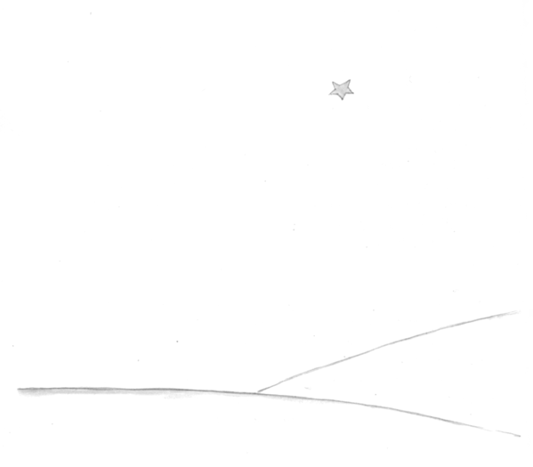
これは、ぼくにとって、せかいでいちばんきれいで、いちばんせつないけしきです。さっきのページのものと、おなじけしきなんですが、きみたちによく見てもらいたいから、もういちどかきます。あのときの王子くんが、ちじょうにあらわれたのは、ここ。それからきえたのも、ここ。
しっかり、このけしきを見てください。もし、いつかきみたちが、アフリカのさばくをたびしたとき、ここがちゃんとわかるように。それと、もし、ここをとおることがあったら、おねがいですから、たちどまって、星のしたで、ちょっとまってほしいんです！ もし、そのとき、ひとりの子どもがきみたちのところへ来て、からからとわらって、こがね色のかみで、しつもんしてもこたえてくれなかったら、それがだれだか、わかるはずです。そんなことがあったら、どうか！ ぼくの、ひどくせつないきもちを、どうにかしてください。すぐに、ぼくへ、てがみを書いてください。あの子がかえってきたよ、って……
［＃改丁］これは、ぼくにとって、せかいでいちばんきれいで、いちばんせつないけしきです。さっきのページのものと、おなじけしきなんですが、きみたちによく見てもらいたいから、もういちどかきます。あのときの王子くんが、ちじょうにあらわれたのは、ここ。それからきえたのも、ここ。
しっかり、このけしきを見てください。もし、いつかきみたちが、アフリカのさばくをたびしたとき、ここがちゃんとわかるように。それと、もし、ここをとおることがあったら、おねがいですから、たちどまって、星のしたで、ちょっとまってほしいんです！ もし、そのとき、ひとりの子どもがきみたちのところへ来て、からからとわらって、こがね色のかみで、しつもんしてもこたえてくれなかったら、それがだれだか、わかるはずです。そんなことがあったら、どうか！ ぼくの、ひどくせつないきもちを、どうにかしてください。すぐに、ぼくへ、てがみを書いてください。あの子がかえってきたよ、って……
1944年７月31日、アントワーヌ・ド・サン＝テグジュペリは飛行機で基地をたったまま、消息を絶ちました。自殺なのか、事故なのか、それとも撃墜されたのか。諸説ありますが、本当のことはよくわかっていません。
サン＝テグジュペリは操縦士でありながら、生涯にいくつかの文学作品を残しました。そのなかでも、"Le Petit Prince"、日本では『星の王子さま』の邦題でよく知られている作品は、今にいたるまで世界中の人々から愛されるたぐいまれな本となっています。
日本ではじめて "Le Petit Prince" が翻訳出版されたのは1953年のこと、石井桃子氏のすすめによってフランス文学者の内藤濯氏が訳筆を執り、岩波書店から刊行されました。しかし最初のうちはあまり注目もされませんでした。ところが、1962年に大型本として出版されてから、児童書としてだけでなく大人向けの本としても読めるという言説が多くなっていき、広い世代の人々にも読まれるようになっていきます。そして本は売れに売れ、一種の『星の王子さま』ブームのようなものが起こったのです。
それから40年以上の月日が経ち、サン＝テックスの著作権が日本国内で失効することになりました。翻訳というものは、著作権（翻訳権）が有効であれば、一社独占契約なされるのが普通です。ですからそれまで "Le Petit Prince" は、岩波書店だけが翻訳出版できたのです。
――著作権が失効する。
それは本が、本として著者の手を離れ、自由になるということです。社会の公共財産として、芸術作品が還元されていくということでもあります。
それは同時に、翻訳が自由になるということでもあり、となると、どの出版社でも翻訳出版できることになります。あそこまでブームになった本が、ついにどこでも出版できるようになる。そこへ、経営的理由か文学的理由かはわかりませんが、さまざまな出版社が乗り出していくことになります。
"Le Petit Prince" の〈新訳ラッシュ〉ともいうべき現象が、2005年から2006年にかけて起こりました。サン＝テックスの著作権が切れる前から、どの出版社がやるのか、どんな翻訳者がこの作品に挑むのか、たいへんな話題になりました。この青空文庫版の翻訳が開始された時点では12冊の訳書が流通していましたが、終了した今（2006年10月現在）では15種類も訳が出ています。まだこれからも増えることでしょう。これだけ数が出るとそれぞれ採算がとれるのかどうか心配ですが、自分の読みたい翻訳を選ぶことができるというのは、翻訳の自由のおかげかもしれません。
ただ、ちょっとした疑問が浮かびます。
――そこにある自由とは、いったい何なのだろうか、と。
確かに翻訳は自由になりました。しかしそれは、フランス語の原典が日本で自由に活用できる、という意味に限ります。日本語訳というテクストが自由になったわけではありません。依然としてそれらは売り物であって、買い手の自由な使用は認められていません。
自由に朗読することはできません。自由にコピーすることもできません。翻訳されたテクストとは違って、本来自由であるはずの挿絵さえ、使ってはいけないと主張されてしまうこともあります。
とりわけ、この "Le Petit Prince" は、今までさまざまな制約に縛られてきました。当時の訳者である内藤濯氏でさえ、その制約とは無縁ではなかったのです。もうそろそろ、自由になってもいいのではないでしょうか。
この翻訳は、Antoine de Saint-Exupery "Le Petit Prince" の全訳です。1943年にレイナル＆ヒッチコック社から刊行されたフランス語版の初版第一刷を底本としています。挿絵もそこからスキャンし、色彩の補正をかけたあと、すべて同じ倍率で縮小してあります。
この初版第一刷は、この『あのときの王子くん』の翻訳活動に関心を寄せていただいた、『「星の王子さま」総覧』管理人 RenardBleu 氏のご厚意によって手に入れることがかないました。また、そのページで公開されていた初版第一刷のテキストがなければ、この翻訳を始めることもなかったでしょう。言葉には表せないほど感謝しております。
さて、話は変わりますが、ここで挿絵について断っておかなければなりません。
挿絵は、その著作者の権利が失効した以上、自由になるべきものです。もし最初に刊行した会社に権利があるとしても、出版から50年以上経過しているので、初版に対する権利はないものと考えられます。
また同時に、これらの挿絵は既存の商標権を侵害するものではありません。
私見ですが、商標権があるから書籍中の挿絵の利用が制限・管理できる、という考えは、法的にいってもおかしいと思います。
もともと〈商標〉は〈他の商品との区別をするための記号・図案〉です。それがほかのものでなくて、どこどこのブランドの商品であることを証明するためのものです。ですから、その有効とする範囲は、本であれば表紙であるとか、題名であるとか、あるいはポスター・広告や看板への使用、商品名、つまり商品の外側につく、あくまでも「付すもの」としての「説明」の部分であると考えられています。
それを本の中身まで適用できるものか、そういった判例が本当に実在しているのかどうか、いささか疑問が残ります。（もちろん、雑誌の中の広告等は別ですが、挿絵がそのようなものでないことは明らかです。）また、商標法における〈使用〉というのは、商品として提供することですから、そうでない利用の場合、どう制限することができるのか、疑わしいように思います。
商標法においては、その標章の使用によって、出所表示機能、自他識別機能が発生しているかどうか、また、商品として市場に出回り、経済活動を担っているのかどうか、という点が、裁判の争点になります。
そう考えた場合、商品であるかどうかは別として、少なくとも、
「本の中身の挿絵は、出所表示機能・自他識別機能を有しない。よって、商標としての使用行為に当たらない。」
と、明確に言えるのではないかと思います。
この翻訳は、翻訳者に許可を得ることなく、自由に朗読することができます。朗読の際、自然に出てくる言い換えなども、してくださってまったく構いません。（つまり、訳者が細かいことをいうことはありません。）
たとえば、この翻訳では会話文を多く、以下のようにしています。
「○○××」と、△△はいった。「■■◇◇！」
それを、朗読に必要な範囲内で、このように読み替えてくださっても結構です。
「○○××。■■◇◇！」と、△△はいった。
「○○××。■■◇◇！」（台詞のみで以下を省略する）
「○○××。■■◇◇！」（台詞のみで以下を省略する）
どちらの方がよく読めるかどうか、そのあたりは、朗読者のご配慮や感性におまかせいたします。
――と、このような注記をつけるのにも、理由があります。そもそもこの翻訳の企画が、朗読のために始められたからです。
佐々木健氏は、プロの声優ナレーターであり、また STORYTELLERBOOK（http://storytellerbook.cocolog-nifty.com/blog/）というブログで朗読ポッドキャスティングをやっておられます。あるとき、青空文庫で公開されていた拙訳の『はだかの王さま』を朗読してくださり、それがご縁でメールを交わす仲となりました。
ちょうどそのとき、私は次に翻訳する作品をどれにしようかと悩んでいて、その候補のなかに "Le Petit Prince" があったのですが、なかなかどれに決めるという踏ん切りがつきませんでした。
そこへ舞い込んできたのが、佐々木氏のメールです。――『はだかの王さま』や『赤毛連盟』のように、無料で公開されていて自由に読める『星の王子さま』はないでしょうか？――と、そう尋ねられたとき、ここはひとつ、自分でやってみよう、内藤濯氏に挑戦してみよう、と覚悟を決めたのです。
1953年に出版された内藤濯［訳］は、その訳者本人が何度か言及なさっているように、まさに〈朗読〉のために作られた翻訳でした。内藤氏は「まず声の言葉あっての文字の言葉である」という言語観をもっておられて、〈言葉の呼吸〉や〈いのちある言葉〉を重要視しておられました。『星の王子さま』という作品の〈ねうち〉は「声を通して読む」ことにあるとお考えになっていたようです。実際、あの翻訳は口述で作られていて（健康上の理由もあったようですが）、原文と訳文を比べながら、できるだけリズムに注意していくども推敲されています。詠む対象とひとつになるというのが、内藤さんが文芸作品に挑む際に用いる〈哲学〉であり、その意味では、あの翻訳は内藤さんの身体からダイナミックに吐き出された翻訳だったように思います。
この『あのときの王子くん』も、佐々木氏という朗読者がそこにいらっしゃる以上、何よりもまず〈読むテクスト〉として、〈語るテクスト〉として織られています。その意味では、内藤氏に挑戦するということになります。この挑戦には、また別の項で語るように、別の意図もあるのですが、果たしてその挑戦がうまくいったかどうか、私に判断することはできません。読者のみなさんのご判断を待つばかりです。
前項でも書いたように、この翻訳は朗読のために作られています。そのため、文体は読むに適したものでなければなりません。また、フランス語では８歳ほどの子どもなら、ただ読むことは何の支障もないというふうにも聞いております。そうであるなら、翻訳の文体も、日本の同じ年齢の子どもが読んだり、聞いたりすることのできるような文体にする必要があります。
とりわけ、語彙には注意しなくてはなりません。小さい子どもでも、目でわかり聞いてわかる言葉。この翻訳では、できるだけ漢語や熟語を廃し、やまと言葉を使うようにしました。しかし、その言葉がやさしいからと言って、内容を簡単にしたということではありません。私は、むずかしい内容だからむずかしい言葉でなければならない、というふうには思いません。特に、この "Le Petit Prince" がそうであるように、たとえやさしい言葉で書かれていても、むずかしいことというのは存在しえます。ですから、私はたとえこの作品の内容が大人向けであっても、言葉の上ではやさしくある以上は、やさしい言葉で訳そうと思います。
平易な言葉を選びつつ、読みやすい文章になるよう心がけました。ときに意味より、リズムや音楽性を優先した部分もあります。そしてなおかつ、もうひとつ文体について配慮した点があります。それは、文章の長さです。
一般に、欧米の書物を日本語に翻訳すると、原典の1.5倍になるというふうに言われます。しかし、この意見に私は納得できません。そのような訳文は、ときに語りすぎの場合が多いからです。
なぜなら翻訳というのは、こなれた日本語を意識しすぎると、わかりやすい文、わかる文が必要であるというふうに思い始めます。それは悪いことではないのですが、原典には余計な説明を付して、文章を膨らませてしまうこともあります。たとえば、原文では一度しか使ってない動詞を反復してみたり、または何でもないところに凝った表現を使ってみたり。あるいは単純に、一言の台詞なのに、長々と語ったりする。もしこれが吹き替え翻訳であれば、すぐに尺が合わなくなるでしょう。
そこでこの翻訳では、原文の長さにできるだけ配慮して、訳文が同じくらいの長さになるよう作られています。それは原文へ可能な限り近づきたいという欲求であると同時に、自分が作品について語りすぎることを抑えるための枷でもあります。
翻訳者に限らず、人はわかっていることをすべて語ろうとします。"Le Petit Prince" であれば、その作品についてわかっていることを、その作品について読み込んだことを、翻訳にすべて出したくなってくるのです。しかし、そのなかには作品に書いてないことも含まれています。それをすべて書けば、また元の作品とは変わってくるでしょう。そういったことは、翻訳ではなく研究書や別の文章として書くべきものであり、翻訳に書き込むものではありません。原文に書いてあることを書き、書かれていないことは書かない、というのが原則であるように思います。
文体をうまく制御し、自分を律することが、翻訳には必要です。どのような条件で、どのような相手に向かって書くのか。そういった措定のようなものが、翻訳には欠かせません。まず書くべきところを抽象し、そうでないところを捨象する。つまり書くべきでないところを想定し、その場所を消去するのです。そしてそのあとに残ったちいさな場所に向かって、精神を統一して訳出していく。こういう厳密な措定を意識しなければ、たちまち翻訳のエクリチュールはぼろぼろに崩れていくことでしょう。
この訳は、さまざまな点で、すでにある内藤濯氏の訳から抜け出ることを試みています。私は、この作品がファンタジーであるとは思いませんし、また『星の王子さま』という題名を冠されるような作品であるとは考えていません。新訳である以上は、前のものに追従するのではなく、それを壊し、乗り越えることを考えねばなりません。
そのため、この翻訳の訳文には、内藤［訳］のファンの方々には、我慢ならないような点がいくつもあるかもしれません。
たとえば、キツネが教えてくれる秘密がそうです。この翻訳では、次のような訳文になっています。
「おいらのひみつだけど、すっごくかんたんなことなんだ。心でなくちゃ、よく見えない。もののなかみは、目では見えない、ってこと。」
内藤［訳］でこの部分は「かんじんなことは、目に見えない」となっています。もしくはのちの方に出てくる「たいせつなことは、目に見えない」で覚えておられる方もおられるかもしれません。ここは原文では〈本質的なもの〉を意味する "l'essential" が取られています。単純に訳すのであれば、〈本質、もと、たま、核、芯〉などの訳語が考えられますが、あえて日本語で〈実質〉という意味も持つ〈なかみ〉という和語を取りました。ここは〈たいせつ〉よりは〈かんじん〉の方が優れていると思いますが、いかんせん言葉が古く、〈そのものの存在にかかわる本質的なこと〉という意味が伝わらないように思います。それに、〈本質が目に見えない〉というのは、キツネが言うように、本当に簡単で当たり前のことです。しかし、〈大切なことは目に見えない〉というのは、果たして当たり前のことなのかどうか、ちょっと疑問です。
それ以外にも、この作品にとって重要な言葉は、できるだけ和語にして、原意が伝わるように心がけたつもりです。また、何度も何度も繰り返される言葉についても、できるだけ同じ訳語になるよう、統一したつもりです。
そういった徹底は、全体に渡って、原文で "petit prince" と呼ばれた部分にしか〈王子〉というフレーズを使わない、というところにも現れています。ずっと〈王子〉と呼ぶのは、いささか童話的にすぎるのではないか、と私は思います。少なくとも、少年本人が自分が王子であると名乗ったわけではないし、操縦士は会話文で一度も「王子くん」と言いません。少なくとも地の文の最初のうちは、〈ぼく〉が気分を害したような、少年に対してむかつきを覚えるような文脈で使われることがほとんどです。
この王子くんに少し気に入らないものを感じていた操縦士が、だんだん彼に心を開いていくのだとすれば、この〈王子〉という言葉が限定的に使われるのを、翻訳で消してしまうことがいいことだとは思えません。
最初からいきなり〈王子さま〉という、なんだかキラキラした登場人物が現れたのではないのです。なんだか不思議な子どもがひとり現れて、むかついたり、同情したり、いろいろな心の変化があって、そしてクライマックスへと向かいます。心の細やかな変化を無視して、童話風に『星の王子さま』という固有名を与えることが、また地の文でも一貫してその名で呼び続けることが果たして最善なのかどうか、疑問に思わざるを得ません。
一方で、"Le Petit Prince" を『星の王子さま』でなく、『小さな王子』のような題名にすることも、あまりいいように思えません。概して、多く出た新訳群は、どうも冠詞や代名詞に対して配慮されていないようなふしがあります。もし "Le Petit Prince" の直訳が『小さな王子』というのであれば、冠詞の "le" はどこへ行ったのでしょう。それを直訳する必要はないのでしょうか？ それとも、その冠詞は不定冠詞でも、定冠詞でも、どちらでも構わないというのでしょうか？
もしこの作品が童話であり、どの登場人物も、彼は "le petit prince" なる人物であるという統一的な態度を取っているのであれば、話は違います。個人の体験や感覚を超越して、様々な人によって語られる童話的世界では、それぞれの登場人物は語り手や聞き手に関係なく、固有のものとなり、ただそこに登場するだけで唯一である資格を得て、定冠詞を有することができます。
しかし、実際この作品で "petit prince" に付くのは定冠詞のときもあれば、不定冠詞になることもあり、また無冠詞にもなります。そして何よりも大事なのは、この作品が操縦士という一人称の語り手による、追憶の物語であるということです。これは、誰によって語られてもいい童話なのではなく、あるひとりの語り手による告白なのです。
さらに、定冠詞と不定冠詞のあり方は、この話のテーマに通ずるものがあります。不定冠詞がつく場合というのは、そのものが世の中にたくさんあって、そのどれでもいいからひとつを取り出したいときです。そのひとつは、ほかのたくさんと何の変わりもありません。キツネの言葉を借りれば、"un renard" といったときのキツネは、「ほかのキツネ１０まんびきと、なんのかわりもない」わけで、どれでもいいのです。ありふれており、そして特定されていないものに対して、不定冠詞が使われるわけです。しかし、語り手とそのキツネが何らかの関わりがある場合、あるいは語り手と聞き手の間で、そのキツネと何からの関わりがあって、キツネが特別な一匹の個体として認識できるとき、そのキツネは定冠詞を持った "le renard" となります。
それは、"le petit prince" の場合でも同じことです。〈ちいさな王子〉なんていう存在は、世界には五万と存在するかもしれません。いくらでも存在の可能性がありますし、そのなかのどの王子でもいいのであれば、"un petit prince" で構わないでしょう。また、誰にとっても同じひとつの王子が存在するのであれば、最初から最後までずっと "le petit prince" でいいわけです。〈星の王子さま〉と呼ぶときも、その王子が星にいることがその存在根拠のようであり、誰と接しようが誰と出会おうがどうでもよくなります。ただ王子が星にいるという理由だけで、〈星の王子さま〉という唯一の存在が識別・認識できるからです。
しかし、この作品を読めば、少年がそのような存在でないことは明らかです。
この "petit prince" に定冠詞がつくだけの関係が、操縦士と少年の間にあります。少年が星にいたから、操縦士にとって大事になったわけではありません。６年前、あるひとりの小さな王子が操縦士の前に現れ、その少年と操縦士はしばらく時をともに過ごします。つまり、操縦士は少年のために時間をなくすのです。そして、ふたりは絆を作ります。だからこそ、６年後の操縦士は、その少年に定冠詞を付けることができますし、付けなければなりません。
語り手が、その少年と出会った時が過去に存在し、そのために "le" をつける。フランス語の話者には、その冠詞が当然のことであっても、日本語の話者にとっては違います。もし〈星の王子さま〉と訳したとき、その含意は、すっかり抜け落ちてしまうことになります。
語り手にとって、〈星の王子さま〉だから大切なのでなく、６年前のサハラ砂漠に下りたとき、〈あのとき〉に出会って一緒に過ごしたからこそ、少年はかけがえのない存在なのです。そのほかのどのときに出会えたかもしれない王子くんではなく、〈あのとき〉の王子くんが大事なのです。だから童話のように超越した時間を話すのではなく、追憶の話として、個人的な体験の話として語られます。
そして、語り手から〈あのとき〉が語られると同時に、読み手はそれを追体験し、操縦士と同じようにその少年と関わりを持ちます。本を読む行為によって時間をなくし、そのために少年が大切なものとなることもあるでしょう。そして、王子くんというのは、ほかの誰が読んだときでもなく、自分がこの本を読んだ〈あのとき〉の王子くんとなるはずです。
このように作品の根幹に関わってくる "le" という定冠詞を、訳題から落とすというのは、翻訳者としてどうしてもできません。ましてや、内藤氏の訳業に挑戦するのであれば、なおさらです。
内藤濯氏のご子息である内藤初穂氏は、このように語られています。
「せっかく新訳されるのですから、新しいタイトルを工夫してほしい。「新しき葡萄酒は新しき革袋へ」です。」
新訳ラッシュの前、各出版社に対して、内藤濯氏の創り出した〈星の王子さま〉というタイトルを使わないでほしいと主張されました。しかし結局、本のタイトルには著作権が発生しないということで、使うなら〈内藤濯の創案〉であることを附記してほしいというアナウンスにとどまることになります。
この翻訳では、内藤濯氏に敬意を持って挑戦するという意味でも、〈星の王子さま〉というタイトルをあえて使いません。そしてもし商業的理由によって、様々な翻訳が『星の王子さま』というタイトルに制約されるのであれば、翻訳の自由もおびやかされているのかもしれません。新しくかつ自由な "Le Petit Prince" を世に出すためにも、直訳の「あのときの王子くん」というタイトルを用いる次第です。
この翻訳を作るにあたり、以下の諸訳について、翻訳研究の側面から分析を行いました。その研究成果が翻訳に反映されています。また、それぞれの翻訳を、訳文作成後の誤訳チェックにも使用いたしました。各訳者様に、深く感謝申し上げます。
内藤濯［訳］（1966）『星の王子さま［改版］』岩波書店
――［訳］（2000）『星の王子さま――オリジナル版』岩波書店
小島俊明［訳］（2005）『新訳 星の王子さま』中央公論新社
三野博史［訳］（2005）『星の王子さま』論創社
倉橋由美子［訳］（2005）『新訳 星の王子さま』宝島社
山崎庸一郎［訳］（2005）『小さな王子さま』みすず書房
池澤夏樹［訳］（2005）『星の王子さま［ハードカヴァー版］』集英社
川上勉、廿樂美登利［訳］（2005）『プチ・プランス 新訳 星の王子さま』グラフ社
藤田尊潮［訳］（2005）『小さな王子 新訳『星の王子さま』』八坂書房
辛酸なめ子［訳］（2005）『「新」訳 星の王子さま』コアマガジン
石井洋二郎［訳］（2005）『星の王子さま』筑摩書房
稲垣直樹［訳］（2006）『星の王子さま』平凡社
河野万里子［訳］（2006）『星の王子さま』新潮社
谷川かおる［訳］（2006）『星の王子さま』ポプラ社
野崎歓［訳］（2006）『ちいさな王子』光文社
――［訳］（2000）『星の王子さま――オリジナル版』岩波書店
小島俊明［訳］（2005）『新訳 星の王子さま』中央公論新社
三野博史［訳］（2005）『星の王子さま』論創社
倉橋由美子［訳］（2005）『新訳 星の王子さま』宝島社
山崎庸一郎［訳］（2005）『小さな王子さま』みすず書房
池澤夏樹［訳］（2005）『星の王子さま［ハードカヴァー版］』集英社
川上勉、廿樂美登利［訳］（2005）『プチ・プランス 新訳 星の王子さま』グラフ社
藤田尊潮［訳］（2005）『小さな王子 新訳『星の王子さま』』八坂書房
辛酸なめ子［訳］（2005）『「新」訳 星の王子さま』コアマガジン
石井洋二郎［訳］（2005）『星の王子さま』筑摩書房
稲垣直樹［訳］（2006）『星の王子さま』平凡社
河野万里子［訳］（2006）『星の王子さま』新潮社
谷川かおる［訳］（2006）『星の王子さま』ポプラ社
野崎歓［訳］（2006）『ちいさな王子』光文社
（以上、刊行年月日順）
さらに、原典の解釈に当たって、以下の研究書・関連書・サイトを参考にしました。同じく各著者様に、深く感謝申し上げます。
稲垣直樹（1992）『サン＝テグジュペリ 人と思想』清水書院
――（1993）『サドから『星の王子さま』へ フランス小説と日本人』丸善
片木智年（2005）『星の王子さま☆学』慶應義塾大学出版会
加藤晴久（2006）『自分で訳す「星の王子さま」』三修社
小島俊明（2000）『改訂版 おとなのための星の王子さま――サン＝テックスを読みましたか』近代文芸社
内藤濯（1971）『未知の人への返書』中央公論社
――（1971）『星の王子とわたし』文藝春秋
――（1976）『落穂拾いの記』岩波書店
内藤初穂（1984）「童心の日記――序に代えて」『星の王子 パリ日記』（内藤濯［著］）グラフ社
――（2003）「『星の王子さま』備忘録その一」『図書 2003.12』岩波書店
――（2006）『星の王子の影とかたちと』筑摩書房
藤田尊潮（2005）『『星の王子さま』を読む』八坂書房
水本弘文（2002）『「星の王子さま」の見えない世界』大学教育出版
三野博司（2005）『『星の王子さま』の謎』論創社
柳沢淑枝（2000）『こころで読む「星の王子さま」』成甲書房
山崎庸一郎（1984）『星の王子さまの秘密』彌生書房
――［編］（1995）『星の王子さまのはるかな旅』求龍堂
――（2000）『『星の王子さま』のひと』新潮社
RenardBleu（1999-2006）『「星の王子さま」総覧』Available online at www.lepetitprince.net (accessed 2005-2006)
――（1993）『サドから『星の王子さま』へ フランス小説と日本人』丸善
片木智年（2005）『星の王子さま☆学』慶應義塾大学出版会
加藤晴久（2006）『自分で訳す「星の王子さま」』三修社
小島俊明（2000）『改訂版 おとなのための星の王子さま――サン＝テックスを読みましたか』近代文芸社
内藤濯（1971）『未知の人への返書』中央公論社
――（1971）『星の王子とわたし』文藝春秋
――（1976）『落穂拾いの記』岩波書店
内藤初穂（1984）「童心の日記――序に代えて」『星の王子 パリ日記』（内藤濯［著］）グラフ社
――（2003）「『星の王子さま』備忘録その一」『図書 2003.12』岩波書店
――（2006）『星の王子の影とかたちと』筑摩書房
藤田尊潮（2005）『『星の王子さま』を読む』八坂書房
水本弘文（2002）『「星の王子さま」の見えない世界』大学教育出版
三野博司（2005）『『星の王子さま』の謎』論創社
柳沢淑枝（2000）『こころで読む「星の王子さま」』成甲書房
山崎庸一郎（1984）『星の王子さまの秘密』彌生書房
――［編］（1995）『星の王子さまのはるかな旅』求龍堂
――（2000）『『星の王子さま』のひと』新潮社
RenardBleu（1999-2006）『「星の王子さま」総覧』Available online at www.lepetitprince.net (accessed 2005-2006)
最後に、次の方々にあらためて感謝申しあげます。STORYTELLERBOOK の佐々木健さん、「星の王子さま」総覧の RenardBleu さん、aozora blog の ag さん、いろんなことを教えてくれたひとりの女の子、そしてこの半年間、なにかと支えになってくれた友人たち。みなさま、本当にありがとうございました。
この翻訳が、読者のみなさまの何かのお役に立つなら、これにまさる幸いはありません。
2006年10月24日 大久保ゆう